CHAT → COWORKER
대화 상대에서 동료로
발전 방향
제어 흐름이 사람에서 모델로 넘어간다
01
자동완성
사람
커서 위치가 곧 지시
커서 위치가 곧 지시
사람의 일계속 타이핑
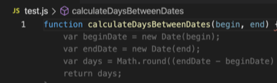
VS Code Copilot
02
대화
사람
매 턴마다 지시
매 턴마다 지시
사람의 일붙여넣고 옮기기
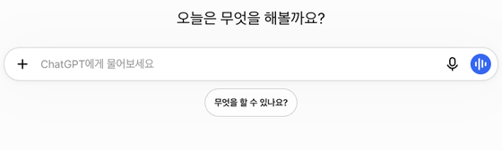
ChatGPT
03
워크플로
사람
경로를 미리 고정
경로를 미리 고정
사람의 일파이프라인 설계
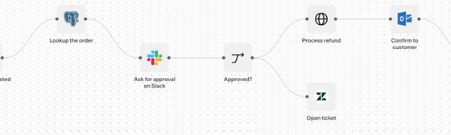
n8n
04
에이전트
모델
경로를 정하고 스스로 검증
경로를 정하고 스스로 검증
사람의 일기준을 주고 결과를 검증
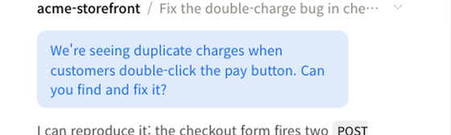
Claude Code
사람이 하는 일은 실행에서
설계와 판단으로 옮겨간다
WHAT CHANGED
채팅창에 붙여넣어 가능성을 시험하던 단계를 지나,
이제는 실제 업무를 맡기고 함께 수행하는 단계로 넘어왔다.
이제는 실제 업무를 맡기고 함께 수행하는 단계로 넘어왔다.
PoC · 시험
→
업무 · 협업
에이전틱 코딩 WORKFLOW
한 번의 요청, 다섯 개의 단계
CORE
되돌아가는 화살표가 있으면 에이전트, 없으면 자동완성이다.
Anthropic 공식 문서 참고
Explore-Plan-Implement-Commit Workflow
Explore-Plan-Implement-Commit Workflow
에이전트는 이 단계를 스스로 돈다.
우리가 설계하는 것은 단계가 아니라, 멈추는 조건과 되돌아가는 규칙이다.
우리가 설계하는 것은 단계가 아니라, 멈추는 조건과 되돌아가는 규칙이다.
PARADIGM SHIFT
AI 에이전트 개발 패러다임 변화
1
Prompt Engineering
모델에게 무엇을 말할까?
- 지시문 작성
- 예시 넣기
- 출력 형식 통제
한 번의 요청
→
2
Context Engineering
어떤 정보를 언제 얼마나 줄까?
- 문맥 선택
- 검색 결과
- 메모리
- 토큰 예산
하나의 세션
→
3
Harness Engineering
에이전트를 어떤 환경에서 굴릴까?
- 도구 · MCP
- Agent Skills
- 메모리 계층
- 검증 루프
- 재사용 SOP
저장소 전체 · 팀 공유
FOCUS
경쟁력의 초점이 프롬프트 작성→문맥 설계→실행 시스템 설계로 이동
WHY
세 단계 모두 LLM의 약점을 줄이기 위한 발전이다
환각 · 맥락 망각 · 낡은 지식 · 검증 없는 완료 선언
환각 · 맥락 망각 · 낡은 지식 · 검증 없는 완료 선언
※ Harness Engineering은 분석적 표현으로, 아직 정착된 용어는 아니다
HARNESS
하네스란 무엇인가
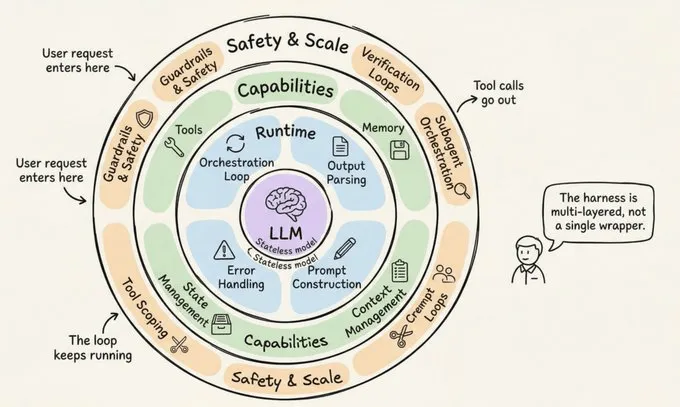
하네스는 LLM 이외의 모든 것이다
하나의 wrapper가 아니라 multi-layered 구조다.
모델은 추론만 하고, 나머지는 전부 이 layer들에서 일어난다.
모델은 추론만 하고, 나머지는 전부 이 layer들에서 일어난다.
RUNTIME
오케스트레이션 루프 · 출력 파싱 · 프롬프트 구성 · 에러 처리
CAPABILITIES
도구 · 메모리 · 상태 관리 · 컨텍스트 관리
SAFETY & SCALE
가드레일 · 검증 루프 · 도구 범위 제한 · 서브에이전트 조율
→사용자 요청은 가장 바깥에서 들어온다
←도구 호출은 가장 바깥으로 나간다
↻그 사이에서 루프는 계속 돈다
모델은 고르는 것, 하네스는 만드는 것.
Agent = Model + Harness
도식 출처: 원저자 표기 필요
도식 출처: 원저자 표기 필요
CODING HARNESS
Claude Code
PERCEPTION → ACTION → OBSERVATION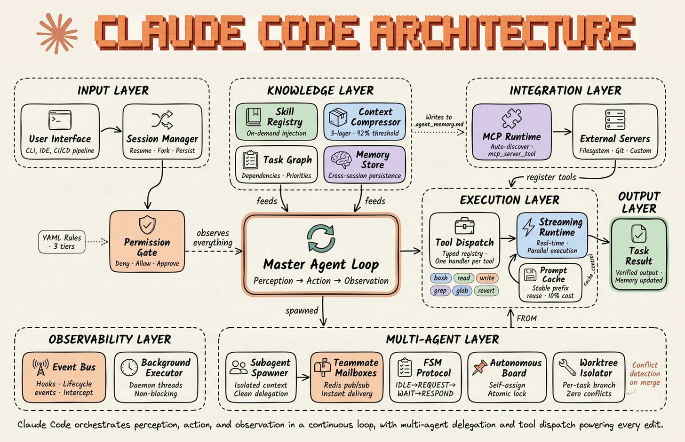
COREMaster Agent Loop
인지 → 행동 → 관찰을 반복한다. 나머지 전부가 이 루프를 돕는 장치다.
GATEPermission Gate
모든 실행이 거쳐가는 관문. 차단 · 허용 · 승인 요청으로 갈린다.
FEEDKnowledge Layer
스킬 · 메모리 · 컨텍스트 압축. 루프에 무엇을 쥐어줄지 정한다.
ACTExecution Layer
도구 디스패치. bash · read · write · grep이 실제 변경을 만든다.
WATCHObservability · Multi-Agent
훅이 지켜보고, 서브에이전트가 격리된 컨텍스트에서 일을 나눠 받는다.
※ 커뮤니티 분석 도식 · 일부 파일명과 수치는 공식 문서와 다를 수 있음
SECRET RECIPE 01
설치하고, 물어보고, 확인한다
Windows PowerShell
# 1 · 설치 — PowerShell 에서
irm https://claude.ai/install.ps1 | iex
claude --version 새 창을 열고 확인
# 2 · 로그인 — 브라우저가 열린다
claude Team 계정 선택 → 승인
/status 로그인 상태 확인
다시 로그인하려면 /login
# 3 · 실습 프로젝트에서 실행
cd edu-stock-chart 교육 레포 안의 실습 프로젝트
claude
# 4 · 하네스 둘러보기
/model sonnet /permissions /context
# 5 · 첫 프롬프트
> 이 프로젝트를 분석해서 구조와 실행 방법을
docs/analysis.md 로 정리해줘
# 6 · 다시 확인
/context 얼마나 찼나
01
설치 · 로그인
설치 후 새 창을 열어야 PATH가 잡힌다. 첫
claude 실행에서 브라우저로 Team 계정 로그인
02
프로젝트 안에서 연다
열린 디렉토리가 곧 작업 범위. 경로에 공백·한글이 없는 곳이 안전하다
03
하네스를 눈으로 본다
실습은 Sonnet으로 통일. 세 명령 모두 모델을 호출하지 않아 토큰을 쓰지 않는다
04
한 문장으로 한 바퀴
탐색 → 정리 → 파일 쓰기 권한 요청 → 결과물
05
전후를 비교한다
대화와 읽은 파일이 컨텍스트의 대부분을 차지한다
관찰 포인트
- 어떤 파일을 어떤 순서로 여는가 — 아무도 지시하지 않았다
- md 파일을 쓰기 직전에 멈춰서 묻는가 — Permission Gate
/context가 전후로 얼마나 달라졌는가
※ Git for Windows 설치 권장 — 있으면 Bash 도구, 없으면 PowerShell 도구로 동작
※ 대안 설치
※ 대안 설치
winget install Anthropic.ClaudeCode · CMD는 install.cmd 방식
SECRET RECIPE 02 · ORCA
에이전트 여러 개를 한 화면에서, Orca
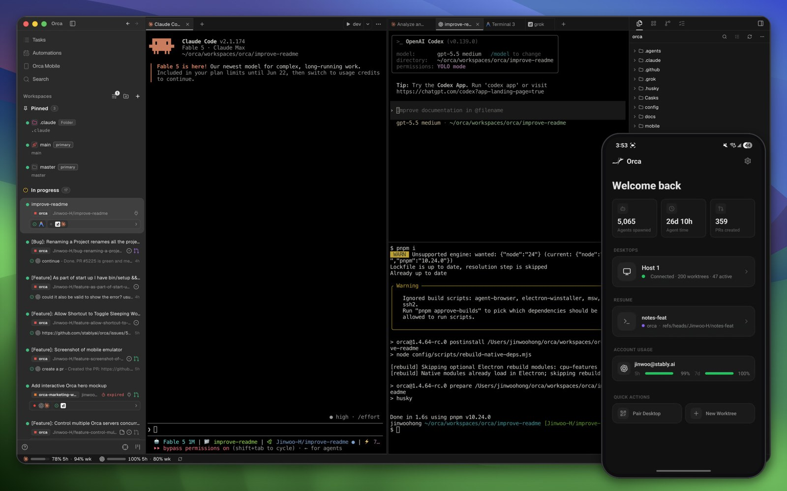
Claude Code · Codex 를 워크트리별 탭으로 동시에 실행 — 오른쪽은 모바일 앱
CLI 에이전트를 격리된 git 워크트리에서 병렬로 돌리는 오픈소스 데스크톱 앱 Stably AI · MIT
01
병렬 워크트리
프롬프트 하나를 에이전트 5개에 나눠, 각자 격리된 워크트리에서 돌리고 결과를 비교해 채택
02
터미널 분할
무제한 분할 · 재시작해도 유지되는 스크롤백
03
디자인 모드
내장 브라우저에서 UI 요소를 클릭하면 HTML · CSS · 스크린샷이 프롬프트로
04
GitHub · Linear 연동
앱 안에서 PR · 이슈를 보고, 작업에서 바로 워크트리 생성
05
SSH 워크트리
원격 서버에서 에이전트를 돌리고 파일 편집 · git · 터미널을 그대로
06
diff 주석
AI가 만든 diff 줄에 코멘트를 달아 에이전트에게 되돌려 보낸다
07
파일 끌어다 놓기
파일 · 이미지를 에이전트 프롬프트로 바로 드래그
08
모바일 앱 · Orca CLI
휴대폰에서 완료 알림과 후속 지시 · 에이전트가
orca 명령으로 Orca를 조작CLAUDE CODE 기본 제공 기능 · SLASH COMMANDS 1
매일 쓰는 명령
1순위컨텍스트를 관리한다
| /context | 지금 무엇이 얼마나 들어있는지 본다 |
| /clear | 대화를 비우고 새로 시작한다 주제가 바뀌면 무조건 |
| /compact | 요약해 공간을 확보한다 /compact API 변경 중심으로 |
| /model | 모델을 바꾼다 작업 난이도에 맞춰 |
| /usage · /cost | 사용량과 비용을 본다 |
2순위세션을 다룬다
| /diff | AI가 무엇을 고쳤는지 본다 |
| /rewind | 체크포인트로 코드·대화를 되돌린다 |
| /resume | 이전 대화를 이어간다 |
| /branch | 현재 지점에서 대화를 분기한다 |
| /btw | 기록에 남기지 않고 물어본다 컨텍스트를 늘리지 않는다 |
| /status | 계정 · 모델 · 프로젝트 상태 |
주제가 바뀌면 /clear. 이 하나만 습관이 되어도 절반은 된다.
CLAUDE CODE 기본 제공 기능 · SLASH COMMANDS 2
하네스를 만드는 명령
3순위구성 요소를 만든다
| /init | 프로젝트를 읽고 CLAUDE.md를 만든다 RECIPE 02 |
| /memory | 메모리 파일을 직접 편집한다 RECIPE 02 |
| /permissions | 허용 · 차단 규칙을 정한다 RECIPE 02 |
| /hooks | 훅을 확인하고 등록한다 RECIPE 03 |
| /skill-creator: | 나만의 스킬을 만든다 공식 플러그인 · 설치 필요 · 이름은 플러그인:스킬 형식 |
4순위도구를 붙이고 품질을 본다
| /mcp | 외부 도구 서버를 연결한다 RECIPE 04 |
| /plugin | 플러그인을 설치하고 배포한다 RECIPE 04 |
| /code-review | 코드를 검토한다 low ~ max · --fix 로 바로 수정 |
| /security-review | 보안 취약점을 검토한다 |
| /verify | 실제로 앱을 띄워 동작을 확인한다 |
| /doctor | 설정을 진단하고 고친다 |
오른쪽의 RECIPE 번호가 앞으로의 실습 순서다. 하나씩 만들어 내 하네스가 된다.
KEYBOARD
손이 먼저 기억해야 할 키
필수이 셋만은 외운다
| Shift + Tab | 권한 모드를 순환한다 Plan 모드 진입이 여기 |
| Esc | 즉시 중단한다 컨텍스트는 유지된다 |
| Esc Esc | 되감기 메뉴 = /rewind |
| Ctrl + R | 명령 기록 검색 |
SHIFT+TAB권한 모드 네 가지
AUTO분류기가 위험한 것만 막는다 · 기본값
MANUAL편집과 명령마다 사람이 승인
ACCEPT EDITS파일 편집은 자동, 그 외는 확인
PLAN소스를 건드리지 않고 계획만 세운다
사람이 개입하는 두 지점이 이 두 키에 있다 — Plan으로 들어가고, Esc로 멈춘다.
EXTEND · 외부 플러그인 · 1/2
개발에 유용한 플러그인
A계획 · 품질 프로세스
superpowers
계획 → TDD → 디버깅 프로세스
feature-dev
탐색 → 설계 → 구현 워크플로
code-simplifier
코드를 읽기 좋게 정리
commit-commands
커밋 · 푸시 · PR 자동화
hookify
막고 싶은 동작을 훅으로
claude-md-management
CLAUDE.md 유지 · 개선
aidlc
AI 주도 개발 라이프사이클 (AI-DLC)
AWS 오픈소스 · 공식 마켓 아님
AWS 오픈소스 · 공식 마켓 아님
agent-skills
스펙 → 계획 → 구현 → 테스트 → 리뷰
Addy Osmani · 공식 마켓 아님
Addy Osmani · 공식 마켓 아님
B코드 품질 · 안전
jdtls-lsp
Java 오류 진단 · 심볼 탐색 · 바이너리 별도 설치
typescript-lsp
TS · JS 오류 진단 · npm 설치 필요
security-guidance
보안 패턴 경고
claude-security
내 코드 심층 취약점 스캔
code-modernization
레거시 코드 현대화 가이드
frontend-design
화면 디자인 가이드 (UI)
ponytail
가장 단순한 해법을 먼저 고른다
공식 마켓 아님
공식 마켓 아님
EXTEND · 외부 플러그인 · 2/2
개발에 유용한 플러그인
C외부 연동 · 메모리 (MCP)
context7
최신 라이브러리 문서 조회
playwright
브라우저로 화면 검증
github
공식 GitHub 연동
atlassian
Jira · Confluence 연동
claude-mem
세션 기록을 저장해 다음 세션에 주입
오픈소스 · 공식 마켓 아님
오픈소스 · 공식 마켓 아님
D문서화 · 시각화
eli5
코드 · 오류를 눈높이에 맞춰 설명
공식 마켓 아님
공식 마켓 아님
archify
아키텍처 · 시퀀스 도식을 HTML로
공식 마켓 아님
공식 마켓 아님
remotion
React로 영상 만들기
공식 마켓 아님
공식 마켓 아님
graphify
코드 · 문서를 지식 그래프로 · HTML 시각화
오픈소스 · 공식 마켓 아님
오픈소스 · 공식 마켓 아님
설치는 공식 마켓에서. 플러그인은 훅과 MCP를 실행할 수 있으니 서드파티는 검토 후에.
실습설치 실습 대상권장권장
PLUGINS · 설치 방법 · 1/2
찾고, 설치하고, 확인한다
claude
# 1 · 찾기
/plugin Discover 탭에서 검색
# 2 · 설치
/plugin install context7@claude-plugins-official
# 3 · 활성화 · 확인
/reload-plugins "Active now"면 생략
/ /mcp 에서 context7 이 보이면 성공
claude plugin list 셸에서 목록 · 상태
01
설치 전에 상세창을 읽는다
Will install — 명령 · 에이전트 · 스킬 · 훅 · MCP · LSP
02
범위 세 가지 중 하나
나만 · 이 저장소 팀 전체 · 나만, 이 저장소에서만
03
공식 마켓은 처음부터 있다
첫 실행 때 자동 등록. 없으면
/plugin marketplace add anthropics/claude-plugins-official
04
켜고 끄고 지운다
/plugin → Installed 탭 · claude plugin disable · uninstallPLUGINS · 설치 방법 · 2/2
찾고, 설치하고, 확인한다
claude
# 4 · 공식이 아닌 마켓에서 (remotion · ponytail · claude-mem)
/plugin marketplace add remotion-dev/claude-code-plugin
/plugin install remotion@remotion
/plugin marketplace add DietrichGebert/ponytail
/plugin install ponytail@ponytail
/plugin marketplace add thedotmack/claude-mem
/plugin install claude-mem
# 5 · 스킬만 있는 저장소 (플러그인 아님)
npx skills add tt-a1i/archify -g
git clone https://github.com/DreambigOu/ELI5.git
New-Item -ItemType Directory -Force "$HOME\.claude\skills" | Out-Null
Copy-Item -Recurse ELI5\skills\eli5 "$HOME\.claude\skills\eli5"
주의
- 플러그인은 훅과 MCP 서버를 실행할 수 있다 — 상세창을 읽고 설치한다
- 공식 마켓 밖은 Anthropic이 검토하지 않는다
SKILL PACKS · 설명 + 2일차 강사 시연 · 1/2
개발 사이클을 이끄는 두 가지 스킬 모음
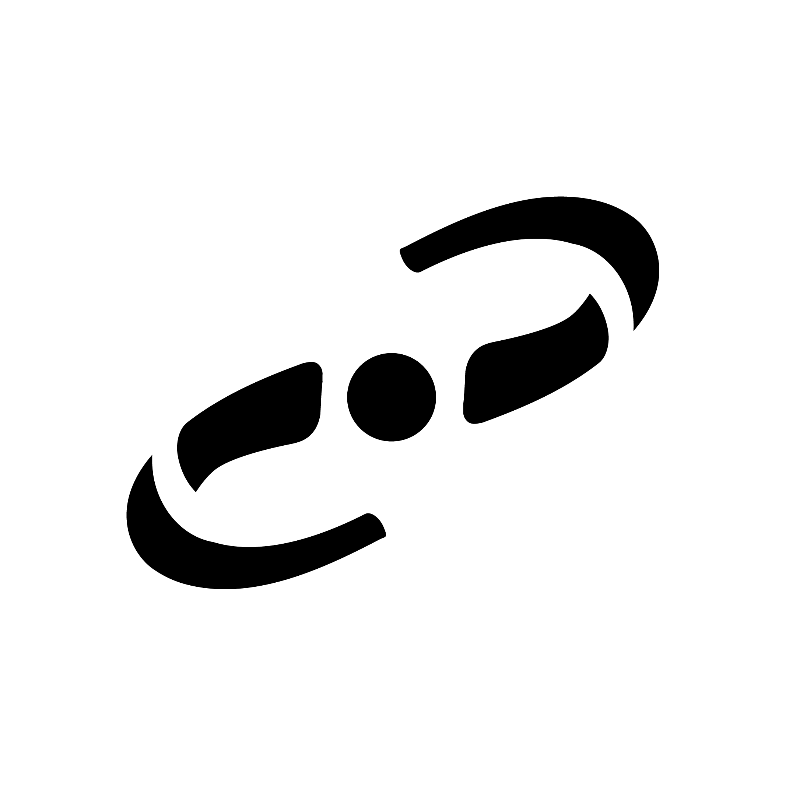
superpowers ★ 293,282
Jesse Vincent · MIT · github.com/obra/superpowers
자동으로 발동하는 개발 방법론
코드 전에 질문하고, 계획 · TDD · 리뷰를 스킬이 강제한다
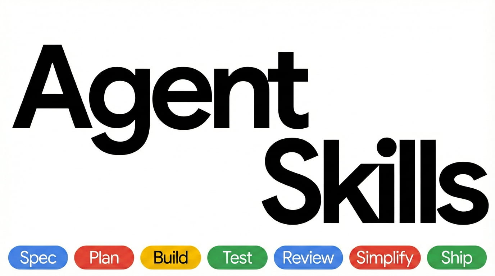
agent-skills ★ 100,054
Addy Osmani · MIT · github.com/addyosmani/agent-skills
명령으로 운전하는 개발 라이프사이클
/spec → /plan → /build → /test → /review → /ship
SKILL PACKS · 설명 + 2일차 강사 시연 · 2/2
개발 사이클을 이끄는 두 가지 스킬 모음
| 단계 · ↻ 태스크마다 반복 | superpowers · 자동으로 발동 | agent-skills · 명령으로 실행 | |
|---|---|---|---|
| 01 | 요구사항·스펙 | brainstorming질문으로 설계를 다듬고 조각별로 승인 | interview-me한 번에 한 질문으로 요구사항 정리/spec코드 전에 구조화된 스펙 |
| 02 | 계획 | writing-plans2~5분짜리 태스크 · 파일 경로 · 검증 단계using-git-worktrees격리된 브랜치에서 작업 | /plan작고 원자적인 태스크/constraints품질 기준을 CONSTRAINTS.md에 |
| 03 | 구현↻ | subagent-driven-development태스크마다 서브에이전트가 구현 · 검토 | /build한 조각씩 구현 · 테스트 · 커밋 |
| 04 | 실행·검증↻ | test-driven-developmentRED → GREEN → REFACTOR 강제systematic-debugging4단계 원인 추적 | /testTDD · 버그는 재현 테스트부터 |
| 05 | 리뷰↻ | requesting-code-review태스크 사이마다 심각도별 점검 | /review5축 리뷰 (정확성·가독성·구조·보안·성능)/code-simplify동작은 그대로, 복잡도만 줄임 |
| 06 | 마무리 | finishing-a-development-branchmerge · PR · 유지 · 폐기 선택 | /ship병렬 점검 후 go / no-go |
★ GitHub 스타 수 · 2026-09-30 기준
PLUGINS · 실습 대상
개발 구현에 활용하는 플러그인
ponytail 실습
★ 148,682LLM의 약점
요청보다 크게 만든다 — 라이브러리 설치, 래퍼 컴포넌트, 불필요한 추상화로 코드가 장황해진다
해법
"가장 게으른 시니어 개발자"처럼 안 만들기 → 있는 것 재사용 → 표준·네이티브 기능 → 한 줄 순으로 가장 단순한 해법을 먼저 고른다
핵심 기능
- 사다리 필요한가? → 코드베이스에 있나? → 표준 라이브러리 → 네이티브
- 강도 lite · full · ultra 선택
- /ponytail-review · audit 과잉 설계를 찾아 삭제 제안
예) 날짜 선택기 404줄 → 23줄 (
코드 −54% · 토큰 −22% · 비용 −20% · 시간 −27%
README 자체 측정 · 기능 12개 · Haiku 4.5
<input type="date">)코드 −54% · 토큰 −22% · 비용 −20% · 시간 −27%
README 자체 측정 · 기능 12개 · Haiku 4.5
context7 실습
★ 62,556LLM의 약점
학습 시점에 멈춘 지식 — 옛 버전 답, 존재하지 않는 API를 지어낸다(환각)
해법
공식 문서와 예제를 버전별로 실시간 조회해 프롬프트에 넣는다. 모델이 기억이 아니라 최신 문서를 보고 코드를 쓴다
핵심 기능
- use context7 를 붙이거나 자동 발동 규칙으로 사용
- MCP 도구 2개 resolve-library-id → query-docs
- 버전 · ID 지정 "Next.js 14" · /vercel/next.js
예) "Spring Boot 3.4 문서를 조회해줘" → 도구 호출이 화면에 뜬다
무료 API 키를 발급하면 호출 한도가 올라간다 (권장)
무료 API 키를 발급하면 호출 한도가 올라간다 (권장)
claude-mem 실습
★ 94,993LLM의 약점
세션이 끝나면 기억이 사라진다 — 매번 프로젝트 코드를 다시 읽어 파악하느라 토큰이 많이 든다
해법
세션 중 한 일을 자동으로 기록 · 요약해 로컬에 저장하고, 다음 세션 시작 때 필요한 맥락을 자동으로 넣어 준다
핵심 기능
- 자동 캡처 훅이 도구 사용을 기록 → 로컬 SQLite
- 3단계 검색 search(목록) → timeline → get_observations(필요한 것만)
- <private> 태그로 저장 제외 · 웹 뷰어
3단계 검색으로 상세 조회를 줄여 토큰 약 10배 절감 (README 주장)
※ 기록 · 요약 자체에도 소량의 토큰이 든다
※ 기록 · 요약 자체에도 소량의 토큰이 든다
★ GitHub 스타 수 · 2026-09-30 기준
SECRET RECIPE 05
플러그인 두 개를 써 본다
먼저 실습 프로젝트 폴더에서 Claude Code 를 연다
cd edu-stock-chartclaude · claude-mem 은 설치 뒤 재시작ponytail
강사 시연전체 점검 대신 파일 하나만 보고 지울 목록을 받는다
01파일 하나만 점검
/ponytail:ponytail-review MovingAverageService.java 검토해줘
일부러 과잉 설계했지만 정상 동작하는 예제 · 수정 안 함
02명령어 세 가지 셋 다 목록만 · 수정은 하지 않는다
- /ponytail-review 바뀐 코드 · 파일 하나를 줄 단위로 점검
- /ponytail-audit 저장소 전체에서 큰 것부터 삭제 후보
- /ponytail-debt ponytail: 주석으로 미뤄 둔 일 목록
볼 것 「위치 · 자를 것 · 대체」 한 줄씩 · 끝에
net: -N linesclaude-mem
실습프로젝트 전체를 기억에 미리 넣는다
01전체 소스를 읽혀 기억시키기
/learn-codebase
모든 소스 파일을 읽어 기억에 저장한다 (약 5분 · 토큰 소모 큼). 끝나면 /exit
02웹 뷰어로 기억 확인 브라우저 주소창에 입력
http://127.0.0.1:37777http://127.0.0.1:37701왼쪽 Windows · 오른쪽 macOS · 안 열리면 settings.json 의 WORKER_PORT 확인 · v14 는 뒤에 /viewer
확인 뷰어에 관찰 기록이 쌓이는가 · 새 세션에서 코드를 다시 읽지 않고 답하는가
설치 · ponytail
/plugin marketplace add DietrichGebert/ponytail/plugin install ponytail@ponytail설치 · claude-mem
/plugin marketplace add thedotmack/claude-mem/plugin install claude-memPLUGINS · 코드 품질 검사
코드는 리뷰로, 화면은 브라우저로 검사한다
code-review 기본 제공
공식 플러그인도 있음변경한 코드를 여러 관점으로 검토해 진짜 문제만 골라 준다
두 가지 방식
- 기본 명령
/code-review현재 변경분(diff)이나 PR 번호를 검토. 강도 low ~ max 선택,--fix로 바로 수정 - 공식 플러그인
code-review@claude-plugins-official병렬 에이전트 4개가 PR을 검토 — CLAUDE.md 준수 2 · 버그 1 · 변경 이력(git blame) 1 - 오탐 줄이기 이슈마다 신뢰도 0~100 점수, 80 미만은 제외하고 GitHub PR에 댓글로 게시
함께 쓰는 명령
/security-review보안 점검 ·/simplify재사용 · 단순화 정리
/code-review주의 PR 리뷰는 GitHub 원격과
gh 가 필요하다. ultra 강도는 클라우드에서 돌고 별도 과금된다playwright 실습
★ 37,713브라우저를 직접 열어 만든 화면을 눌러 보고 확인한다
어떻게 동작하나
- Playwright MCP (Microsoft) — 페이지의 접근성 트리(구조화된 텍스트)를 읽어 조작. 스크린샷 · 비전 모델이 필요 없다
- 도구
browser_navigate·browser_snapshot·browser_click·browser_fill_form·browser_take_screenshot - 품질 확인 콘솔 오류(
browser_console_messages) · 네트워크 실패(browser_network_requests)까지 본다
이런 때 쓴다
- 구현한 UI가 실제로 열리고 차트가 그려지는지 · 폼 입력 흐름 · 화면 오류 재현
localhost:5173 을 열어서 차트가 그려지는지, 콘솔 오류가 없는지 확인해줘주의 도구 정의와 접근성 트리가 토큰을 많이 쓴다. 저장소도 토큰 효율은 CLI + 스킬 방식이 낫다고 안내한다 (Node 18 이상)
★ GitHub 스타 수 · 2026-09-30 기준 · microsoft/playwright-mcp
PLUGINS · 실습 · playwright
Playwright 를 설치하고 Swagger 를 눌러 본다
목표 AI 가 브라우저를 직접 조작해 Swagger 로 API 를 실행하고 응답을 확인한다 · 실습 폴더
cd edu-stock-chartclaude| 단계 | 입력 · 클릭하면 복사 | 확인할 것 | |
|---|---|---|---|
| 01 | 설치MCP 플러그인 | /plugin install playwright@claude-plugins-official | 재시작 후 /mcp 에서 playwright · browser_navigate 가 보이는가 · Chrome 이 없으면 ! npx playwright install chrome |
| 02 | 프로젝트 실행API 8080 · 화면 5173 | ! ..\scripts\start.bat! ../scripts/start.sh | 첫 줄 Windows · 둘째 줄 macOS / Linux · 빌드가 끝나면 localhost:5173 안내 · 확인 ! ..\scripts\status.bat |
| 03 | Swagger 열기AI 가 브라우저를 연다 | playwright 로 http://localhost:8080/swagger-ui.html 을 열고 dashboard-controller 의 API 목록을 알려줘 | 브라우저 창이 뜨는가 · /indices · /schedules · /rankings 3개 |
| 04 | API 호출Swagger Try it out | Swagger 에서 GET /api/dashboard/indices 를 Try it out 으로 실행하고 응답 코드와 첫 번째 지수의 이름 · 가격을 알려줘 | 200 · 첫 지수 달러 인덱스 102.00 |
| 05 | 정리실습이 끝나면 | ! ..\scripts\stop.bat! ../scripts/stop.sh | 8080 · 5173 포트가 풀리는가 · 스냅샷 · 스크린샷은 .playwright-mcp/ 에 쌓인다 → .gitignore |
역할 Swagger 는 API 의 입출력을 보여 주고 · Playwright 는 그 화면을 사람 대신 눌러 준다
토큰 페이지를 열 때마다 화면 구조가 컨텍스트에 들어간다 · API 자체의 상태 코드 검증은
./gradlew test 가 더 적합하다PLUGINS · 실습 대상
개발 산출물 · 코드 분석 및 질의
eli5 실습
★ 1,5675세초등 5학년대학생매니저엔지니어디자이너부모배우자
누구에게 설명하느냐에 맞춰 답을 바꿔 준다
제공
- 대상 4종류: 나이 · 학년 · 직무 · 관계
- 어휘 · 비유 · 어조 · 깊이 · 관점을 대상에 맞춰 조정
장점
- 코드 · 오류 · 개념을 비개발자에게 바로 설명
- 스킬 파일 하나라 설치가 가볍다
이 오류를 초등학생에게 설명해줘archify 실습
★ 74,917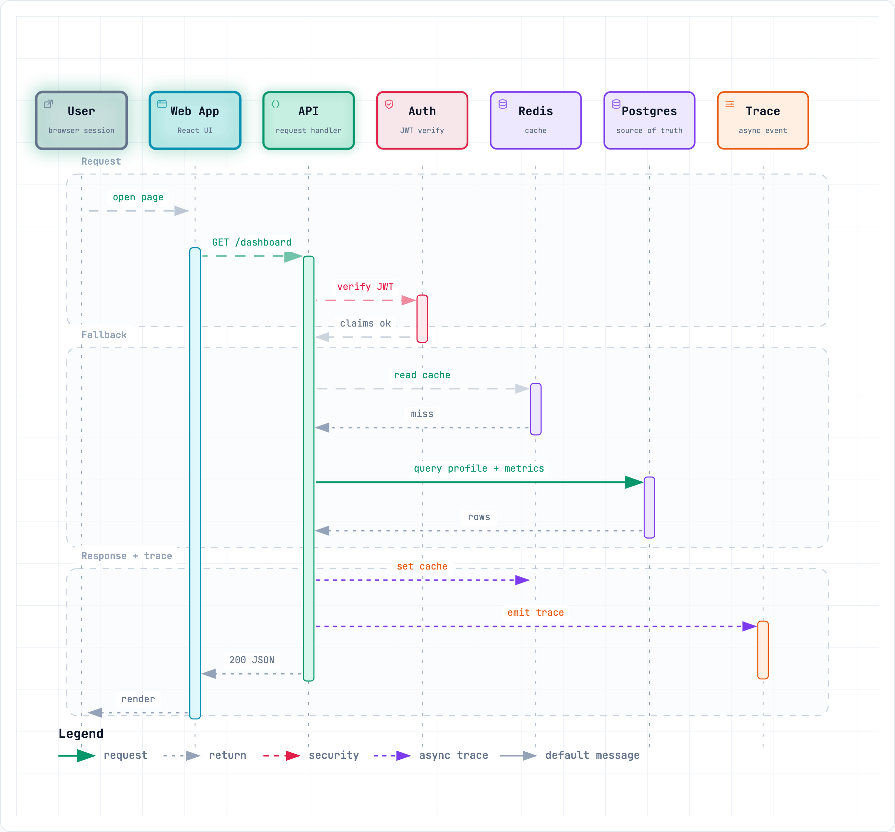
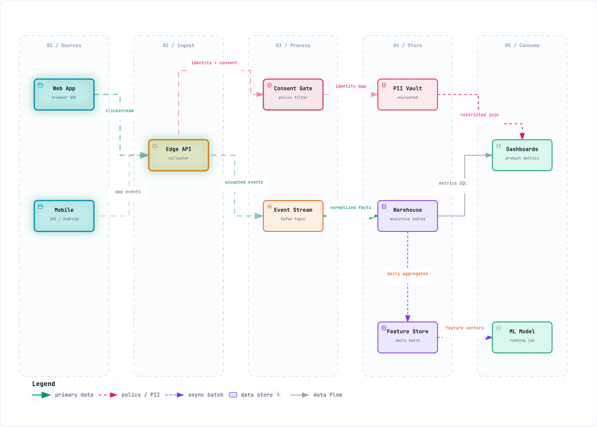
코드를 읽고 다이어그램을 HTML 한 파일로 만든다
제공
- 아키텍처 · 워크플로 · 시퀀스 · 데이터 플로우 · 라이프사이클 5종
- 다크/라이트 · 경로 추적 · PNG · SVG · 영상 내보내기
장점
- 저장소를 읽어 소스 근거의 다이어그램
- 채팅으로 계속 수정 (“Redis 추가”)
- HTML 파일이라 설치 없이 공유
edu-stock-chart의 주식 조회 흐름을 archify로 시퀀스 다이어그램으로 그려줘remotion 권장
★ 61,240React 코드로 영상을 만든다 — 코드가 원본
제공
- 스킬 remotion-create · studio(미리보기) · render(내보내기)
- 웹앱에 넣는 Player · 대량 렌더링
활용
- 발표 · 소개 · 데이터 연동 영상
- 에이전트에게 말로 시키고 코드로 다듬기
- 수정 · 재사용 · 버전 관리가 쉽다
remotion으로 edu-stock-chart를 소개하는 15초 영상을 만들어줘★ GitHub 스타 수 · 2026-09-30 기준 · remotion 은 본 저장소(remotion-dev/remotion) 기준
PROJECT STRUCTURE
Claude Code 프로젝트 구조
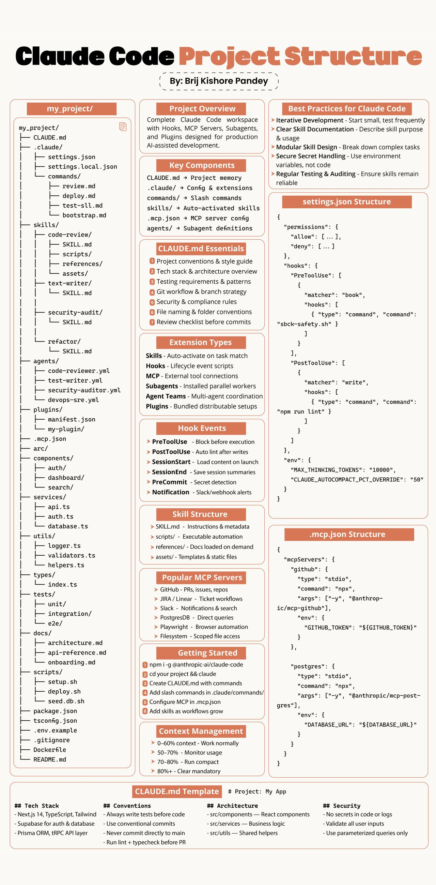
클릭하면 확대CLAUDE.md
프로젝트 메모리. 세션마다 항상 읽힌다 (다음 장)
.claude/settings.json
팀 공유 설정. permissions · hooks · env
.claude/settings.local.json
내 로컬 설정. git에 올리지 않는다
.claude/commands/
슬래시 명령. md 파일 하나가 명령 하나 (
/review)skills/<이름>/SKILL.md
작업이 맞으면 자동 활성화되는 스킬. scripts · references · assets 포함
agents/
서브에이전트 정의 (code-reviewer 등). 역할을 나눠 병렬로 일한다
.mcp.json
외부 도구(MCP 서버) 연결: GitHub · DB · Playwright
plugins/
스킬 · 명령 · 에이전트 · 훅 · MCP를 묶어 배포하는 단위
Hooks
특정 시점에 스크립트 실행. 실행 전 차단 · 수정 후 자동 lint
그림은 서드파티 인포그래픽 (Brij Kishore Pandey). 공식 문서와 다른 곳:
skills/ · agents/ 는 .claude/ 아래에 둔다 · 에이전트 파일은 .md · PreCommit 은 공식 훅 이벤트가 아니다매번 읽히는 프로젝트 배경지식
CLAUDE.md
역할
- 세션이 시작될 때마다 자동으로 읽혀 컨텍스트에 들어간다
- 그래서 반복해서 주입하는 프롬프트 · 배경지식을 적는다. 대상은 자주 바뀌지 않는 정보
어디에 두나 · 읽히는 순서
| 01 | 조직 정책 파일 | 그 PC의 모든 사용자 · 개인이 제외할 수 없다 |
| 02 | ~/.claude/CLAUDE.md | 내 모든 프로젝트 · 나만 |
| 03 | ./CLAUDE.md | 이 프로젝트 · 팀과 공유 (git) |
| 04 | ./CLAUDE.local.md | 이 프로젝트 · 나만 (.gitignore) |
| 05 | 하위 폴더 CLAUDE.md | 그 폴더의 파일을 읽을 때만 로드 |
덮어쓰지 않고 이어 붙인다 · 실행 위치에 가까운 파일이 나중에 읽힌다 · 충돌 시 따를 쪽이 보장되지 않으니 모순되게 쓰지 않는다
CLAUDE.md에 넣는 정보
기술 스택
Spring Boot 3.4 · Java 21
Gradle · JPA + H2
Gradle · JPA + H2
명령어
gradlew.bat build
gradlew.bat test · bootRun
gradlew.bat test · bootRun
프로젝트 구성
패키지 구조
컨트롤러 → 서비스 → 리포지토리
컨트롤러 → 서비스 → 리포지토리
Git 규칙
브랜치 전략
커밋 메시지 규칙
커밋 메시지 규칙
프로젝트 설명
무엇을 위한 프로젝트인가
주식 차트 연습용 웹 서비스
주식 차트 연습용 웹 서비스
CLAUDE.md · 무엇을 넣을까 · 1/2
좋은 CLAUDE.md 쓰는 법
예시 · 실습 프로젝트의 CLAUDE.md · 태그 = 들어가는 분류
# edu-stock-chart 주식 시세를 조회해 차트로 보여 주는 교육용 웹 서비스 프로젝트 설명 ## Tech Stack 기술 스택 - Spring Boot 3.4, Java 21, Gradle 8.6, JPA + H2, Lombok - UI: Vite 6 + Chart.js 4 (edu-stock-chart-ui) ## Commands 명령어 - `gradlew.bat build` — 빌드 + 테스트 - `gradlew.bat test` — 단위 테스트 - `gradlew.bat bootRun` — 실행 (http://localhost:8080) ## Architecture 프로젝트 구성 - 패키지: `kr.co.koscom.edu.stockchart` - 컨트롤러 → 서비스 → 리포지토리 (로직은 서비스에) ## Git Git 규칙 - 브랜치: `feature/*` → `main` - 커밋 메시지: 한글, `type: 요약`
CLAUDE.md · 무엇을 넣을까 · 2/2
좋은 CLAUDE.md 쓰는 법
핵심 5가지 · HumanLayer
- 꼭 알려줄 것만무엇으로 만들었나(스택 · 구조) · 왜 만드나(목적) · 어떻게 일하나(명령 · 검증)
- 모든 작업에 해당하는 것만일부 작업에만 맞는 지시는 뺀다. 관련 없는 내용이 많을수록 무시되기 쉽다
- 점진적 공개세부 내용은 별도 md로 나누고, CLAUDE.md에는 어디를 보면 되는지만 적는다. 코드 복사 대신 file:line
- 스타일은 린터에게포매터 · 린터(필요하면 hook)에 맡긴다. Claude는 린터가 아니다
- 자동 생성은 초안으로만/init 결과를 그대로 쓰지 말고 한 줄씩 검토한다. 모든 단계에 영향을 주는 파일이다
주의 사항내용이 많다고 무조건 좋은 것이 아니다. 지시가 늘수록 뒤쪽만이 아니라 전부 고르게 덜 지켜진다
모델 크기별 권장 지시 수
대형 150 ~ 200
중형 80 ~ 120
소형 40 ~ 60
꿀팁
CLAUDE.md는 항상 컨텍스트에 들어가 토큰을 쓴다. 정말 필요한 것만 쓰고, 상황별 내용은 별도 md 파일로 빼서 CLAUDE.md에는 경로와 언제 읽는지만 적는다.
DB 스키마를 바꿀 때 → docs/db-schema.md (@import 는 시작 시 함께 로드되어 절약되지 않는다)
참고: HumanLayer, Writing a good CLAUDE.md (2025-11) · 대형 수치는 글 기준, 중형 · 소형 수치는 대략적 추정 · 계층 · Git 규칙은 예시
SECRET RECIPE 06
CLAUDE.md를 만들어 본다
| 단계 | 입력 · 클릭하면 복사 | 확인할 것 | |
|---|---|---|---|
| 01 | 준비프로젝트 폴더에서 Claude Code 실행 | cd edu-stock-chartclaude | 프롬프트 입력창이 열린다 |
| 02 | 초안 만들기/init 이 코드를 분석해 CLAUDE.md 를 만든다 | /init | edu-stock-chart/CLAUDE.md 가 생긴다. 파일이 이미 있으면 덮어쓰지 않고 개선안을 제안한다 |
| 03 | 정리하기초안에서 필요한 것만 남긴다 | CLAUDE.md를 정리해줘. 기술 스택, 빌드 · 테스트 · 실행 명령, 패키지 구성과 계층 규칙, Git 규칙, 프로젝트 설명만 남기고 코드를 읽으면 알 수 있는 내용과 파일별 설명은 지워줘. 100줄 이하로. | 한 줄씩 읽는다. 빼도 실수하지 않을 줄은 지운다 |
| 04 | 규칙 추가우리 팀 규칙을 한두 줄 넣는다 | CLAUDE.md의 Git 섹션에 규칙을 추가해줘. 브랜치는 feature/* 에서 작업해 main 으로 PR 머지하고, 커밋 메시지는 한글로 "type: 요약" 형식으로 쓴다. | Git 섹션에 두 줄이 늘었는가 (규칙은 예시이니 팀 기준으로 바꾼다) |
| 05 | 로드 확인CLAUDE.md 가 읽히는지 본다 | /context | 목록의 Memory files 아래에 CLAUDE.md 가 보이는가 |
| 06 | 새 세션 검증기억 없이 시작해도 아는지 묻는다 | /exitclaude이 프로젝트 테스트는 어떻게 실행해? | 코드를 다시 읽지 않고 CLAUDE.md 의 명령으로 답하는가 |
초안은 그대로 쓰지 않는다. CLAUDE.md는 매 세션 들어가므로 정리 단계가 핵심이다
입력이 여러 줄이면 위에서부터 차례로 입력한다
SKILLS · 개념
Skill 이란
무엇인가?
Skill 은 특정 작업을 매번 같은 품질로 끝내도록
지시 · 맥락 · 자료를 묶어 둔 재사용 가능한 능력이다.
지시 · 맥락 · 자료를 묶어 둔 재사용 가능한 능력이다.
Skill 은 일을 올바르게 하는 방법을 적어 둔
플레이북이다 — 매번 똑같이.
플레이북이다 — 매번 똑같이.
일관된 결과
시간 절약 ·
반복 설명 감소
반복 설명 감소
모범 사례
표준화
표준화
생산성 ·
품질 향상
품질 향상
전문 지식을 한 번 정리해 두고, 언제 어디서나 다시 쓴다.
Skill 은 작업이 맞을 때만 읽히니, 많이 만들어도 부담이 적다.
Skill 은 작업이 맞을 때만 읽히니, 많이 만들어도 부담이 적다.
Skill 은 이렇게 동작한다
1. 만들기
절차 · 맥락 · 예시 · 자료를 SKILL.md 에 정리
2. 켜기
요청이 description 과 맞으면 자동 · /이름 으로 직접
3. 실행
지시대로 작업 · 본문은 이때만 읽힌다
4. 결과
매번 같은 형식 · 같은 품질의 결과
Skill 안에 들어가는 것
절차 · 워크플로
순서 · 완료 기준
예) DTO → Service
→ Test → 통과
예) DTO → Service
→ Test → 통과
예시
좋은 입력 · 출력
샘플
샘플
자료
references/ 문서
scripts/ 스크립트
scripts/ 스크립트
맥락 · 규칙
왜 · 언제 · 지킬 것
예) 금융이라 BigDecimal
예) 금융이라 BigDecimal
템플릿
반복 산출물 형식
예) Controller ·
Test 뼈대
예) Controller ·
Test 뼈대
잘 만드는 두 가지 원칙
- 영역이 겹치지 않게 — 두 스킬의 description 이 같은 상황을 가리키면 엉뚱한 스킬이 켜진다. 담당 범위를 나눈다 (test-writer 는 테스트만, code-review 는 리뷰만)
- 스킬 하나에 의도 하나 — 리뷰 + 테스트 + 커밋을 한 스킬에 섞지 않는다. 작게 나누고 필요하면 조합한다
SKILLS · 구조 · 1/2
Skill 의 파일 구성과, 컨텍스트에 들어오는 순서
디렉토리 · 폴더 하나 = 스킬 하나
.claude/skills/
└── api-scaffold/
├── SKILL.md ← 필수 · 이름 · 설명 · 절차
├── references/
│ └── layer-rules.md ← 참고 문서 (선택)
├── scripts/
│ └── check.sh ← 실행 스크립트 (선택)
└── assets/
└── Test.java.tmpl ← 템플릿 (선택)
위치 프로젝트 .claude/skills/ (git 으로 팀 공유) · 개인 ~/.claude/skills/ · 플러그인 안 skills/
SKILL.md · 부분마다 읽히는 시점이 다르다
1항상 · 세션 시작 --- name: api-scaffold description: 새 REST API 를 추가할 때 사용. Controller · Service · Test 뼈대를 만든다 ---3스킬이 켜질 때 ## 절차 1. dto/ 에 요청 · 응답 record 2. service/ 에 로직 (금액은 price-rules) 3. controller/ 에 엔드포인트 + @Min/@Max 4. Mockito · @WebMvcTest 테스트 작성 ## 완료 기준 - ./gradlew test 통과4본문이 가리킬 때만 ## 참고 - 계층 규칙은 references/layer-rules.md
SKILLS · 구조 · 2/2
Skill 의 파일 구성과, 컨텍스트에 들어오는 순서
컨텍스트 창
< 에이전트 기본 시스템 프롬프트 · CLAUDE.md >
기본세션마다 항상
1
api-scaffoldprice-rulestest-writercode-reviewcommit-pr…
세션 시작모든 스킬의 name · description 만 (스킬당 수십 토큰)
2
사용자: 종가 수익률 조회 API 를 추가해줘
요청description 과 맞는 스킬을 고른다
3
에이전트: api-scaffold 스킬을 쓴다 → SKILL.md 읽기
결과: SKILL.md 본문 (절차 · 완료 기준)
스킬 켜짐이때 본문 전체가 들어온다
4
Read references/layer-rules.md
결과: layer-rules.md 내용
참고 따라가기본문이 가리키고 필요할 때만
5
Bash scripts/check.sh
결과: OK · 3 files created
스크립트 실행코드는 안 들어오고 실행 결과만
한 번에 다 넣지 않고 필요한 만큼 단계적으로 불러온다 (점진적 공개) → 스킬이 많아도 컨텍스트가 가볍다.
그래서 description 은 짧고 정확하게, 긴 내용은 본문 · references 로 나눈다.
그래서 description 은 짧고 정확하게, 긴 내용은 본문 · references 로 나눈다.
SKILLS · 카테고리
SW 개발 스킬 9가지 — 언제 무엇을 만드나
라이브러리 · API 레퍼런스
LIBRARY & API REFERENCE
사내 라이브러리 · CLI · SDK 의 올바른 사용법과 함정
이럴 때AI 가 사내 라이브러리를 자꾸 틀리게 쓸 때
billing-lib · platform-cli · sdk-gotchas
제품 검증
PRODUCT VERIFICATION
실행 중인 앱을 직접 움직여 동작을 확인
이럴 때테스트 통과만으로 부족할 때 · 효과가 가장 크다
signup-driver · checkout · chart-ui-check
데이터 · 분석
DATA & ANALYSIS
데이터 · 모니터링 연결, ID · 필드명 · 쿼리 패턴
이럴 때지표 · 로그를 반복해서 조회할 때
funnel-query · grafana · datadog
업무 자동화
BUSINESS AUTOMATION
여러 도구를 오가는 일을 명령 하나로
이럴 때매일 · 매주 같은 보고 · 티켓 작업을 할 때
standup · tickets · weekly-recap
스캐폴딩 · 템플릿
SCAFFOLDING & TEMPLATES
프레임워크 규칙에 맞는 뼈대 코드 생성
이럴 때새 API · 마이그레이션을 반복해서 만들 때
api-scaffold · new-migration · new-app
코드 품질 · 리뷰
CODE QUALITY & REVIEW
팀 코드 기준과 리뷰 방법 (훅 · CI 에서도)
이럴 때리뷰 · 테스트 기준을 모두 같게 하고 싶을 때
price-rules · test-writer · code-review
CI/CD · 배포
CI/CD & DEPLOYMENT
커밋 · 푸시 · 배포를 안전하게
이럴 때PR 감시 · 배포 절차가 정해져 있을 때
babysit-pr · deploy · cherry-pick
장애 대응 런북
INCIDENT RUNBOOKS
증상 → 조사 → 보고서
이럴 때알림 · 에러 로그에서 원인을 찾을 때
oncall · log-correlator · queue-debug
인프라 운영
INFRASTRUCTURE OPS
정리 · 유지보수 — 삭제가 많아 안전장치 필수
이럴 때안 쓰는 리소스 · 의존성 · 비용을 점검할 때
orphans · deps · cost-investigation
좋은 스킬은 한 카테고리에 깔끔하게 들어간다. 여러 카테고리에 걸치면 에이전트가 헷갈린다 — 스킬 하나에 의도 하나
작성 팁 description 은 사람이 아니라 모델이 읽고 켤지 정하는 문장 · 함정(gotcha) 모음이 가장 값지다 · 당연한 내용은 쓰지 않는다 · 작게 시작해 키운다
SKILLS · 사전 실습 · eli5
eli5 Skill 을 설치하고 프로젝트를 물어본다
| 단계 | 입력 · 클릭하면 복사 | 확인할 것 | |
|---|---|---|---|
| 01 | 설치스킬만 있는 저장소 · 플러그인 아님 | git clone https://github.com/DreambigOu/ELI5.gitNew-Item -ItemType Directory -Force "$HOME\.claude\skills" | Out-NullCopy-Item -Recurse ELI5\skills\eli5 "$HOME\.claude\skills\eli5" | PowerShell 에서 실행 · Claude Code 를 새로 시작한 뒤 / 를 눌러 eli5 가 보이는가 |
| 02 | 프로젝트에서 연다열린 디렉토리가 곧 작업 범위 | cd edu-stock-chartclaude | 실습 프로젝트 폴더 안에서 열었는가 |
| 03 | 쉽게 물어본다슬래시로 스킬을 직접 부른다 | /eli5 edu-stock-chart 프로젝트가 무엇을 하는지 초등학생에게 설명해줘 | 어떤 파일을 어떤 순서로 읽는가 · 어려운 용어 대신 비유로 설명하는가 |
| 04 | 대상을 바꾼다같은 질문 · 다른 청중 | 이 프로젝트의 구조(Controller → Service → Mapper)를 매니저에게 설명해줘 | 슬래시 없이도 eli5 를 불러오는가 · 어휘 · 비유 · 깊이가 03 과 달라지는가 |
| 05 | 코드를 물어본다쉬운 설명이 맞는지 본다 | MovingAverageService 가 이동평균을 계산하는 방식을 신입 개발자에게 설명해줘 | 설명이 실제 코드와 맞는가 — 쉬운 말이 곧 정확한 말은 아니다 · 의심되면 해당 파일을 열어 대조 |
비교 eli5 없이 "쉽게 설명해줘"만 해 보고, 대상(5세 · 매니저 · 신입)을 지정했을 때와 비교한다
참고
~/.claude/skills 에 설치하면 모든 프로젝트에서 보인다 (개인 환경)SKILLS · 실습 1 · 저장 · 조회 API · 1/2
스캐폴딩 Skill 을 만들어 본다
| 단계 | 입력 · 클릭하면 복사 | 확인할 것 | |
|---|---|---|---|
| 01 | 준비skill-creator 가 있는지 먼저 확인 | ! claude plugin list/plugin install skill-creator@claude-plugins-official | 있고 ✔ enabled → 02 로 · disabled → /plugin 에서 enable · 없으면 아래 줄로 설치 후 다시 시작 |
| 02 | 스킬 만들기슬래시 명령으로 skill-creator 를 부른다 | /skill-creator:skill-creator .claude/skills/ 에 api-scaffold 스킬을 만들어줘. 바디를 DB 에 저장 · 조회하는 API 를 추가할 때 쓴다. 순서: ① 계획 ② 기존 코드 스캔 ③ Controller → Service → MyBatis Mapper · XML(바디 @Valid) ④ ./gradlew test | 질문이 오면 답한다 · 스킬 하나에 의도 하나 (저장 · 조회 API 뼈대만) |
| 03 | 팀 규칙 · 템플릿스킬 없이는 모를 우리 팀 표준 | api-scaffold 에 팀 규칙과 템플릿을 넣어줘. 규칙: ① Controller 에서 Mapper 직접 호출 금지 — Controller → Service → Mapper 순서만 허용 ② RESTful 스펙 준수 — 조회 GET · 생성 POST · 수정 PUT · 삭제 DELETE, 경로는 명사 복수형(예: GET /api/accounts/{accountNo}) ③ @RestController + @RequestMapping("/api/...") ④ Swagger 설명 어노테이션 필수 — 클래스 @Tag · 메서드 @Operation(summary, description) · 파라미터 @Parameter ⑤ 생성자 주입(@RequiredArgsConstructor), @Autowired 필드 주입 금지. assets/ 에 Controller · Service · Mapper · Mapper XML 템플릿을 기존 코드를 본떠 둔다. | ! ls -R .claude/skills/api-scaffold 로 템플릿 4개 · SKILL.md 에 팀 규칙 5가지가 있는가 |
SKILLS · 실습 1 · 저장 · 조회 API · 2/2
스캐폴딩 Skill 을 만들어 본다
| 단계 | 입력 · 클릭하면 복사 | 확인할 것 | |
|---|---|---|---|
| 04 | 실제 API 추가출납 계좌 잔고 조회 (account 테이블 · 샘플 3건 준비됨) | /api-scaffold 계좌 잔고 조회 API 를 추가해줘. 계좌번호(accountNo)를 받아 account 테이블에서 예금주 · 잔고를 조회하고, 없는 계좌는 404 로 응답한다. | 조회가 GET 인가 · Controller 가 Service 만 호출하는가 · @Tag · @Operation 이 붙었는가 · 생성자 주입인가 · 계획 → 스캔 → 작성 → 검증 순서인가 |
| 05 | 검증테스트 후 Swagger 에서 직접 호출 | ! ./gradlew test | 테스트 통과 · Swagger 에서 110-1234-5678 을 넣으면 홍길동 · 1,500,000 · 없는 계좌는 404 |
| 06 | 자동 호출새 세션에서 슬래시 없이 | 거래량 등록 · 조회 API 를 추가해줘. IN: {symbol, tradeDate, volume>0} 저장 → 201 · OUT: 종목별 조회 → [{tradeDate, volume}] 날짜순, 없는 종목 404. 스펙대로 테스트도 작성해줘. | 말하지 않아도 api-scaffold 를 불러오는가 · 등록 POST · 조회 GET 인가 · Swagger 설명이 붙었는가 · 테스트로 201 · 200 · 404 · 400 확인 |
비교 스킬 없이 하면 조회는 보통 GET · 주입은 제각각 → 스킬로는 POST · 생성자 주입
참고 · github.com/anthropics/skills ↗권장 공식 예제와 SKILL.md · 구조를 비교해 본다
SKILLS · 실습 2 · 단위 테스트
이제 직접 해 보세요 — 테스트 Skill
실습 2 실습 1 과 같은 흐름으로, 이번에는 단위 테스트를 만드는 test-writer 스킬을 직접 만든다 · 대상은 실습 1 의 계좌 잔고 조회 API
| 단계 | 입력 · 클릭하면 복사 | 확인할 것 | |
|---|---|---|---|
| 01 | 스킬 만들기준비는 실습 1 과 같다 | /skill-creator:skill-creator .claude/skills/ 에 test-writer 스킬을 만들어줘. Service 테스트를 작성할 때 쓴다. 순서: ① 대상 코드 읽기 ② 테스트 목록 계획(기본은 정상 · 예외 두 케이스) ③ 작성 ④ ./gradlew test | 스킬 하나에 의도 하나 (테스트 작성만 · 기능 코드는 고치지 않는다) |
| 02 | 팀 규칙 · 템플릿DB 를 안전하게 쓰는 테스트 표준 | test-writer 에 팀 규칙과 템플릿을 넣어줘. 규칙: 모든 테스트는 @SpringBootTest · DB 를 건드리면 @Transactional 로 자동 롤백 · @BeforeEach 로 데이터 준비, @AfterEach 로 자원 정리 · 테스트끼리 순서 의존 금지 · @DisplayName 한국어 · given / when / then · 금액은 isEqualByComparingTo. assets/ 에 Service 테스트 템플릿을 둔다. | 템플릿 1개 · SKILL.md 에 @SpringBootTest · @Transactional · @AfterEach 규칙이 있는가 |
| 03 | 테스트 만들기계좌 Service · 정상과 예외만 | /test-writer 계좌 잔고 조회 Service 테스트만 작성해줘. 케이스는 두 개: 정상(110-1234-5678 → 홍길동 · 1,500,000) · 없는 계좌 예외. 다른 계층 · 케이스는 만들지 않는다. | Service 테스트 1개 · 케이스 2개만 생기는가 (토큰 절약) · @SpringBootTest · @Transactional · @AfterEach 가 붙는가 |
| 04 | 검증테스트가 진짜 잡는지 본다 | ! ./gradlew test | 모두 통과 · 두 번 연속 돌려도 통과(롤백 · 정리 확인) · 로직을 일부러 틀리면 실패하는가 |
| 05 | 자동 호출새 세션에서 슬래시 없이 | MovingAverageService 의 window 경계값 테스트를 보강해줘 | 말하지 않아도 test-writer 를 불러오는가 · 기존 Mockito 방식이 아니라 팀 규칙(@SpringBootTest)대로 쓰는가 |
비교 스킬 없이 하면 테스트 스타일 · 검증 범위가 매번 다르다 → 스킬로 팀 테스트 규칙을 통일한다
막히면 실습 1 의 단계를 그대로 따라 한다
MCP · 개념
MCP — AI 에이전트를 시스템에 꽂는 표준 연결
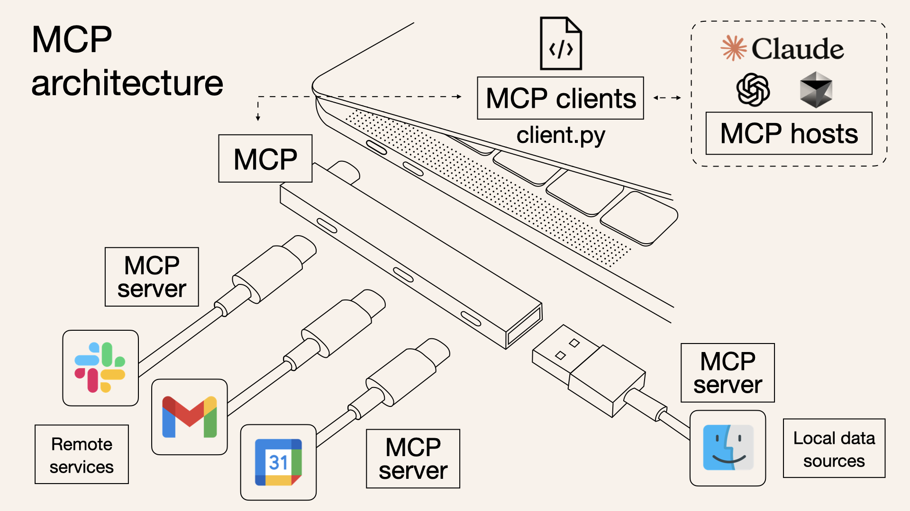
클릭하면 확대노트북 = AI 앱(Host) · 허브 = MCP · 케이블 = MCP Server · 끝에 꽂힌 것 = 원격 서비스 · 로컬 데이터
MCP(Model Context Protocol) 는 AI 에이전트가 외부 시스템과 이야기하는 표준 규격이다. USB-C 처럼 한 번 맞춰 두면 어떤 AI 앱에서도 같은 연결을 쓴다.
HostAI 앱 — Claude Code · Claude Desktop · IDE. 사용자가 대화하는 곳
ClientHost 안에서 서버 하나와 1 : 1 로 연결을 맡는 부분
Server기능을 내놓는 쪽 — 도구 · 리소스 · 프롬프트. 로컬(파일 · DB) 또는 원격(Slack · Gmail · Calendar)
연결하면 에이전트가 더 할 수 있는 것
읽기사내 DB · 문서 · 최신 라이브러리 문서 (context7)
실행티켓 생성 · 메시지 전송 · 일정 등록
검증브라우저를 직접 열어 화면 확인 (Playwright)
재사용서버 하나를 여러 AI 앱 · 팀원이 같이 쓴다
Skill 은 아는 것을, MCP 는 할 수 있는 것을 늘린다. context7 도 MCP Server 다 — 뒤에서 직접 연결해 본다.
SKILL vs MCP · 언제 무엇을 쓰나
SkillsVSMCP
Skills
에이전트에게 가르친다
HOW · 어떻게 할지규칙 · 절차 · 템플릿 — 아는 것을 늘린다
EXAMPLE
우리 팀 규칙대로 만드는 계좌 API
(RESTful · Swagger 설명 · 생성자 주입)
(RESTful · Swagger 설명 · 생성자 주입)
api-scaffold · test-writer
MCP
에이전트를 연결한다
WHAT · 무엇이 필요한지도구 · 데이터 — 할 수 있는 것을 늘린다
EXAMPLE
외부 API 의 실시간 시세 ·
사내 DB 의 계좌 잔고 · 최신 문서
사내 DB 의 계좌 잔고 · 최신 문서
context7 · Playwright · DB
Skill — 어떻게 해야 하는지 알려 주면 되는 일
MCP — 밖에 있는 걸 가져오거나 실행해야 하는 일
둘 다 — 연결은 MCP, 쓰는 법은 Skill
먼저 묻는다 → 외부 시스템에 닿아야 하나? 예: MCP · 아니오 → 반복되는 규칙 · 절차인가? 예: Skill · 아니오: 프롬프트나 CLAUDE.md 로 충분
MCP · 개발에서 쓰는 곳
개발자가 많이 쓰는 MCP — 카테고리 · 쓰임 · 오픈소스
01
코드 저장소 · 협업
이럴 때이슈대로 고치고 PR · MR 올리기, CI 실패 원인 찾기
이슈 · PR / MR · 리뷰 코멘트 · CI 로그 · 코드 검색
02
이슈 · 문서
이럴 때Jira 요구사항을 읽고 구현 → Confluence 설계 문서 갱신
JQL · CQL 검색 · 이슈 생성 · 상태 변경 · 페이지 작성
03
전문 I/O 정보
이럴 때전문 레이아웃대로 Controller 의 요청 · 응답 VO (입출력 스펙) 를 정의할 때
전문 ID 로 입출력 필드 조회 · VO 스펙 생성 · 파싱 · 샘플 생성 · 길이 검증
오픈소스— 없음 · 사내 제작
04
DB 스키마
이럴 때테이블 구조를 보고 Mapper XML · DTO 를 만들 때
스키마 · 테이블 · 인덱스 조회 · 읽기 전용 SQL (Oracle 포함)
오픈소스bytebase/dbhub
06
화면 검증 · 브라우저
이럴 때만든 화면이 실제로 동작하는지 눈으로 확인할 때
페이지 열기 · 클릭 · 입력 · 스크린샷 · 콘솔 확인
08
사내 데이터 표준
이럴 때표준 용어 · 도메인대로 컬럼 · 변수명을 지을 때
표준 용어 · 도메인 사전 · 테이블 정의서 조회
오픈소스— 없음 · 사내 제작
도입 원칙 읽기 전용 · 최소 권한 토큰부터 · 운영 DB · 로그는 연결하지 않는다 · 원격 MCP 는 데이터가 외부로 나간다 · 필요한 MCP 만 켠다 (도구 정의가 늘 컨텍스트를 차지) · 점선 카드는 공개 오픈소스가 없어 직접 만든다
MCP · 실습
Context7 MCP 를 연결해 쓴다
목표 모델이 학습 이후에 나온 스펙을 MCP 로 공식 문서에서 찾아 답하게 한다 · 실습 폴더
cd edu-stock-chartclaude| 단계 | 입력 · 클릭하면 복사 | 확인할 것 | |
|---|---|---|---|
| 01 | 모델 고정비교를 위해 | /model claude-sonnet-4-6 | 지식 기준 2025.08 · Spring Boot 4 (2025.11 출시) 를 모르는 모델로 비교한다 |
| 02 | 연결 확인이미 있는지 먼저 본다 | ! claude mcp list | context7 이 보이면 04 로 · 플러그인으로 깔았다면 plugin:context7 으로 보인다 |
| 03 | MCP 등록없을 때만 · 팀과 공유 | ! claude mcp add --transport http --scope project context7 https://mcp.context7.com/mcp | .mcp.json 이 생기는가 · 플러그인 방식은 /plugin install context7@claude-plugins-official |
| 04 | 로그인처음 한 번 | /mcp | context7 선택 → Authenticate → 브라우저 승인 · 도구 resolve-library-id · query-docs 가 보이는가 |
| 05 | 질문끝에 use context7 | Spring Boot 4에서 REST API 버전 관리(v1, v2)를 헤더 방식으로 설정하는 방법과 application.yml 예제를 알려줘. use context7 | resolve-library-id → query-docs 호출이 뜨는가 · 공식 문서 출처가 붙는가 |
| 06 | 비교/mcp 에서 끄고 같은 질문 | Spring Boot 4에서 REST API 버전 관리(v1, v2)를 헤더 방식으로 설정하는 방법과 application.yml 예제를 알려줘 | yml 속성 이름이 05 와 같은가 다른가 → 다음 장에서 결과 비교 |
필요할 때만 켠다 연결된 MCP 의 도구 정의는 늘 컨텍스트를 차지한다 · 실습 후 안 쓰면
/mcp 에서 끈다API 키 방식 context7.com/dashboard 에서 발급 →
--header "Authorization: Bearer 키"MCP · 실습 결과
context7 을 켜면 답이 바뀐다
조건 같은 질문 · 같은 모델 Claude Sonnet 4.6 (지식 기준 2025.08 · Spring Boot 4 는 2025.11 출시) · context7 만 껐다 켰다
질문
Spring Boot 4에서 REST API 버전 관리(v1, v2)를 헤더 방식으로 설정하는 방법과 application.yml 예제를 알려줘context7 없음
웹 검색으로 대체context7 미연결 → WebSearch 1회 → 블로그 4개를 근거로 답함
yml답으로 나온 설정
spring:
mvc:
apiversion:
enabled: true
header: X-API-Version
default-version: "1"
supported-versions: ["1", "2"]
- enabled 없는 속성
- header → 실제는 use.header
- default-version · supported-versions → 실제는 default · supported
결과 오류 없이 무시된다 → 버전 관리가 켜지지 않는다 · Java 설정 · 컨트롤러 코드는 맞음
use context7
공식 문서 조회context7 3회 호출 → Spring Boot 4.0.0 공식 소스를 근거로 답함
yml답으로 나온 설정
spring:
mvc:
apiversion:
use:
header: X-API-Version
default: "1.0"
supported: ["1.0", "2.0"]
detect-supported: true
- use.header · default · supported 공식 속성 이름과 일치
- detect-supported 컨트롤러의 version 값을 자동 수집
결과 공식 문서와 일치 · 근거가 블로그 → 공식 소스로 바뀜
정리모르는 최신 내용은 AI 가 웹 검색으로 메우지만, 설정 키처럼 정확해야 하는 값은 틀릴 수 있다. context7 은 버전별 공식 문서로 답한다.
참고Opus · Sonnet 5.5 (지식 기준 2026.06) 는 context7 없이도 맞힌다 · 차이는 학습 시점 이후 내용에서 난다
MCP · 실습
Playwright MCP 로 Swagger 를 직접 눌러 본다
목표 AI 가 브라우저를 직접 조작해 API 를 실행하고 화면으로 확인한다 · 준비 Node.js 18+ · Chrome · 실습 폴더
cd edu-stock-chartclaude| 단계 | 입력 · 클릭하면 복사 | 확인할 것 | |
|---|---|---|---|
| 01 | 연결 확인이미 있는지 먼저 본다 | ! claude mcp list | playwright 가 보이면 03 으로 · 플러그인으로 깔았다면 plugin:playwright 로 보인다 |
| 02 | MCP 등록없을 때만 · 팀과 공유 | ! claude mcp add --scope project playwright -- npx @playwright/mcp@latest | .mcp.json 이 생기는가 · 플러그인 방식은 /plugin install playwright@claude-plugins-official · 등록 후 재시작 |
| 03 | 도구 확인로그인 없음 | /mcp | playwright 선택 → browser_navigate · browser_click · browser_take_screenshot 이 보이는가 |
| 04 | 서비스 기동Swagger 가 뜬다 | ! ../scripts/start.sh! ..\scripts\start.bat | localhost:8080/swagger-ui.html 이 열리는가 · 아래는 Windows |
| 05 | Swagger 열기AI 가 브라우저를 연다 | playwright 로 http://localhost:8080/swagger-ui.html 을 열고 보이는 API 목록을 알려줘 | 브라우저 창이 뜨는가 · dashboard-controller 3개 · stock-controller 1개 |
| 06 | Try it out눌러서 실행 | Swagger 에서 GET /api/stocks/{symbol}/moving-average 를 Try it out 으로 symbol 005930, window 3 으로 실행하고 응답 코드와 첫 번째 값을 알려줘 | 200 · points 8개 · 첫 값 2026-09-03 70133.33 |
| 07 | 오류 · 증거스크린샷 | 같은 API 를 window 1 로 실행해 응답 코드를 알려주고 응답 화면 스크린샷을 저장해줘 | 400 이 나오는가 · 스크린샷 파일 경로를 알려주는가 |
토큰 페이지를 열 때마다 화면 구조(스냅샷)가 컨텍스트에 들어간다 · 다 쓰면
/mcp 에서 끈다파일 스냅샷 · 스크린샷은
.playwright-mcp/ 에 쌓인다 → .gitignore · Chrome 이 없으면 npx playwright install chrome
HOOKS · 개념
Hooks — 정해진 순간에 반드시 실행된다
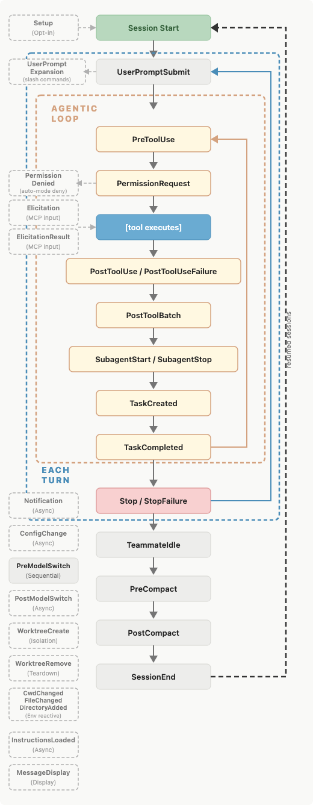
클릭하면 확대Hook 은 에이전트가 일하는 흐름의 정해진 시점(세션 시작 · 도구 실행 전후 · 작업 끝)마다 자동으로 실행되는 명령이다. CLAUDE.md 의 지시는 AI 가 잊을 수 있지만, hook 은 매번 반드시 돈다.
개발 흐름의 어느 단계에 붙이나
작업 시작환경 준비 — 브랜치 · 이슈 · 팀 규칙을 미리 알려 준다
요청 입력입력 점검 — 비밀번호 · 키 · 고객 정보가 섞였는지 본다
코드 수정 전안전장치 — 위험 명령 · 운영 설정 ·
.env 수정을 막는다코드 수정 후품질 자동화 — 포맷터 · import 정리를 바로 적용한다
작업 마무리검증 게이트 — 린트 · 테스트 · 빌드를 못 넘으면 다시 고치게 한다
대기 중알림 — 승인 · 입력을 기다리면 메신저 · 데스크톱으로 알린다
이런 일이면 hook 으로 만든다
매번 빠뜨리는 일린트 · 포맷 · 테스트 실행
사람이 보기 귀찮은 일비밀 정보 · 금지 파일 검사
사고 나면 큰 일운영 DB · 삭제 명령 차단
CLAUDE.md 는 부탁, Hook 은 보장이다. 꼭 실행돼야 하는 것만 hook 으로 — 느린 명령은 매 턴을 느리게 만든다. 시점 전체는 다음 장.
HOOKS · 시점 전체 · 1/3
Claude Code hook 시점 33개 — 언제 실행되나
01세션4
SessionStart세션 시작 · 재개 · /clear · 압축 직후
Setup--init · --maintenance 로 시작할 때 (CI 준비 1회)
InstructionsLoadedCLAUDE.md · rules 파일을 읽어 들일 때
SessionEnd세션이 끝날 때 (exit · /clear · logout)
02프롬프트 · 화면3
UserPromptSubmit차단프롬프트 제출 직후 · AI 가 처리하기 전
UserPromptExpansion차단슬래시 명령이 프롬프트로 펼쳐질 때
MessageDisplayAI 답변 텍스트가 화면에 표시될 때
03도구 실행6
PreToolUse차단도구 실행 직전 · matcher 로 도구 이름 지정
PermissionRequest권한 승인 창이 뜰 때 · decision 으로 허용 · 거부
PermissionDeniedauto 모드가 도구 호출을 거부했을 때
PostToolUse도구 실행이 성공한 직후
PostToolUseFailure도구 실행이 실패한 직후
PostToolBatch차단병렬 도구 호출 묶음이 끝나고 다음 판단 전
04응답 종료 · 알림3
Stop차단AI 가 응답을 마쳤을 때 · 막으면 이어서 일한다
StopFailureAPI 오류(rate limit · 과부하)로 턴이 끝났을 때
Notification권한 요청 · 입력 대기 알림을 보낼 때
★ 개발에서 자주 쓰는 시점 · 차단 exit 2 로 막을 수 있다 (Stop 류는 「계속 일해」) · 출처 code.claude.com/docs/en/hooks · 2026.10
HOOKS · 시점 전체 · 2/3
Claude Code hook 시점 33개 — 언제 실행되나
05서브에이전트 · 작업5
SubagentStart서브에이전트가 생성될 때
SubagentStop차단서브에이전트가 일을 마칠 때
TaskCreated차단작업 목록에 작업이 만들어질 때
TaskCompleted차단작업을 완료로 표시할 때
TeammateIdle차단에이전트 팀의 팀원이 쉬려 할 때
06컨텍스트 · 모델4
PreCompact차단컨텍스트 압축 직전 (수동 · 자동)
PostCompact컨텍스트 압축이 끝난 뒤
PreModelSwitch차단모델 변경을 적용하기 직전
PostModelSwitch모델이 바뀐 뒤
07환경 변화6
ConfigChange차단세션 중 설정 파일이 바뀔 때
CwdChanged작업 디렉터리가 바뀔 때 (cd)
DirectoryAdded/add-dir 로 작업 폴더를 추가할 때
FileChanged지켜보는 파일(.env 등)이 바뀔 때
WorktreeCreate차단worktree 를 만들 때 · 기본 git 동작 대체
WorktreeRemove차단hook 이 만든 worktree 를 지울 때
08MCP2
Elicitation차단MCP 서버가 도구 실행 중 사용자 입력을 요청할 때
ElicitationResult차단사용자가 답한 뒤 · 서버로 보내기 전
★ 개발에서 자주 쓰는 시점 · 차단 exit 2 로 막을 수 있다 (Stop 류는 「계속 일해」) · 출처 code.claude.com/docs/en/hooks · 2026.10
HOOKS · 시점 전체 · 3/3
에이전트마다 hook 이 다르다
시점 개념은 같아도 이름 · 작성 방식이 달라 에이전트를 바꾸면 hook 도 옮겨 써야 한다
Claude Code
settings.json 에 셸 명령
명령이 exit 2 로 끝나면 막는다
시점 이름 예PreToolUse · PostToolUse · Stop
opencode
JS / TS 플러그인
.opencode/plugins/ 에 코드로 작성한다
시점 이름 예tool.execute.before · session.idle · file.edited
pi agent
TypeScript 확장 · pi.on()
~/.pi/agent/extensions/ 에 확장으로 작성한다
시점 이름 예tool_call · tool_result · agent_end · session_start
HOOKS · 실습 1
작업이 끝나면 빌드 검사 — 실패하면 스스로 고친다
목표 Stop hook 으로 빌드 검사를 매번 강제하고, 깨진 코드를 AI 가 스스로 고치게 한다 · 실습 폴더
cd edu-stock-chartclaude| 단계 | 입력 · 클릭하면 복사 | 확인할 것 | |
|---|---|---|---|
| 01 | 현재 확인이미 있는지 먼저 본다 | /hooks | Stop 에 등록된 hook 이 없는가 · 있으면 02 를 건너뛴다 |
| 02 | hook 추가AI 에게 시킨다 | .claude/settings.json 에 Stop hook 을 추가해줘. 명령은 ./gradlew compileJava -q 1>&2 || exit 2 로 해줘. | .claude/settings.json 이 생기는가 · /hooks 에 Stop 이 보이는가 |
| 03 | 일부러 깨뜨리기컴파일 에러를 낸다 | MovingAverageService 에 존재하지 않는 클래스 PriceStats 를 반환하는 summary() 메서드를 추가해. 빌드는 확인하지 마. | AI 가 끝내려는 순간 Stop hook 이 막고 컴파일 에러가 표시되는가 |
| 04 | 자동 복구입력하지 않고 지켜본다 | — 입력 없음 — | AI 가 에러를 읽고 스스로 고친 뒤 빌드가 통과해야 끝나는가 |
| 05 | 되돌리기실습 코드 정리 | ! git restore src | MovingAverageService 가 원래대로 · hook 은 남겨 두거나 /hooks 에서 지운다 |
|| exit 2 가 핵심 gradle 은 실패하면 exit 1 → 그냥 알리고 끝난다 · exit 2 여야 막고 에러를 AI 에게 돌려준다
주의 계속 실패하면 멈추지 못한다 → 입력의
stop_hook_active 로 두 번째는 통과 · test 는 매 턴이 느려지니 compileJava 부터HOOKS · 실습 2 · 이제 해 보세요
도구 실행 전에 막고, 실행 후에 남긴다
목표 PreToolUse 로 설정 파일 수정을 막고, PostToolUse 로 고친 파일을 기록한다 · 둘 다 matcher
Edit|Write| 단계 | 입력 · 클릭하면 복사 | 확인할 것 | |
|---|---|---|---|
| 01 | PreToolUse 추가실행 전 · 막기 | .claude/settings.json 에 PreToolUse hook 을 추가해줘. matcher 는 Edit|Write, 대상 파일이 application.yml 이면 "설정 파일은 수정 금지" 를 stderr 로 내고 exit 2 로 막아줘. | hook 입력(stdin JSON)의 tool_input.file_path 를 보고 판단하는가 |
| 02 | PostToolUse 추가실행 후 · 기록 | PostToolUse hook 도 추가해줘. matcher 는 Edit|Write, 수정된 파일 경로를 시간과 함께 .claude/edit-log.txt 에 한 줄씩 남겨줘. | /hooks 에 PreToolUse · PostToolUse 가 모두 보이는가 |
| 03 | 막히는지Pre 확인 | application.yml 의 server.port 를 9090 으로 바꿔줘 | "설정 파일은 수정 금지" 로 막히는가 · ! git diff --stat 에 변경이 없는가 |
| 04 | 남는지Post 확인 | MovingAverageService 클래스 위에 한 줄 주석을 추가해줘 | ! cat .claude/edit-log.txt 에 시간 · 파일 경로가 찍히는가 |
| 05 | 되돌리기실습 정리 | ! git restore src | 코드가 원래대로 · hook 은 /hooks 에서 확인 후 지우거나 남긴다 |
Pre 는 막을 수 있고 Post 는 못 막는다 Post 시점엔 이미 파일이 바뀌었다 → 기록 · 포맷 · 알림 같은 후처리용
hook 이 안 먹으면
/hooks 로 등록 확인 → 그래도 안 되면 /exit 후 claude 재시작
ENGINEERING · 진화
프롬프트에서 그래프까지 — 엔지니어링은 바깥으로 넓어진다
클릭하면 확대
01Prompt메시지한 번의 요청에 필요한 것을 다 담는다 — 역할 · 배경 · 지시 · 예시 · 형식단위 · 입력 하나질문 잘 쓰기 · use context7
02Context기억창은 유한하다 — 남길 것 · 줄일 것 · 버릴 것을 고른다단위 · 창에 남는 것CLAUDE.md · Skill · /compact
03Harness기계모으고 → 실행하고(도구 · 서브에이전트) → 검증한다단위 · 한 번의 실행Skill · MCP · Hook · Subagent
04Loop반복 실행목표 · 멈춤 조건(최대 반복 · 예산) · 자동 완료 검사로 다시 돌릴지 정한다단위 · 전체 실행
05Graph조율여러 루프의 순서 · 병렬 · 누가 누구를 검토할지 정한다단위 · 전체 작업
CONTEXT · RAG
컨텍스트의 핵심은 양이 아니라 맞는 정보다
창을 줄이는 관리도 중요하지만, 답의 품질은 필요한 정보를 정확히 찾아 넣는 것에서 정해진다. 이걸 RAG(Retrieval-Augmented Generation)라고 부른다.
질문→찾기Retrieve→붙이기Augment→답하기Generate
Vector DB뜻으로 찾는다
"계좌 해지 절차" → [0.12, −0.87, …] → 가까운 조각 3개
문서를 조각내 숫자 벡터(임베딩)로 저장하고, 질문과 의미가 가까운 조각을 꺼낸다
이럴 때표현이 달라도 뜻이 비슷한 걸 찾을 때 — 사내 규정 · 매뉴얼 · FAQ · 장애 기록
약점정확한 숫자 · 관계 · 최신 여부는 놓치기 쉽다
Chroma · pgvector · Qdrant
Graph DB관계로 찾는다
(계좌) ─보유→ (고객) ─가입→ (상품)
대상은 노드, 관계는 엣지로 저장하고, 관계를 여러 단계 따라가며 찾는다
이럴 때「이걸 바꾸면 어디가 영향받나」 — 테이블 · API 의존성, 권한 · 조직 관계
약점노드 · 관계를 먼저 설계하고 쌓는 비용이 크다
Neo4j · GraphRAG
LLM Wiki정리해 두고 읽는다
[[계좌]] ↔ [[이체 규칙]] ↔ [[장애 2025-03]]
LLM 이 원문을 미리 읽고 서로 링크된 Markdown 페이지로 정리해 둔다 · 사람도 읽고 고친다
이럴 때프로젝트 · 도메인 지식을 사람과 AI 가 함께 쌓을 때 — 설계 결정 · 코드 구조 · 용어집
약점원문이 바뀌면 다시 정리해야 어긋나지 않는다
obsidian-second-brain · Obsidian
어떤 저장소를 쓰든 들어간 데이터의 품질이 답을 정한다 — 오래되거나 틀린 문서를 넣으면 틀린 답이 그럴듯하게 나온다. 앞에서 쓴 context7 도 공식 문서를 찾아 넣는 RAG 다.
LLM WIKI · 실습 · obsidian-second-brain · 1/2
코드를 위키로 만들고, 위키로 코드를 만든다
준비 없을 때만 설치 (uv 필요)
/plugin marketplace add eugeniughelbur/obsidian-second-brain/plugin install obsidian-second-brain@obsidian-second-brain| 단계 | 입력 · 클릭하면 복사 | 확인할 것 | |
|---|---|---|---|
| 01 | vault 만들기빈 폴더 → init · wiki 스타일 | ! mkdir ../koscom-wiki/obsidian-second-brain:obsidian-init | 볼트 경로 ../koscom-wiki · 레이아웃 wiki 선택 → _CLAUDE.md · index.md · raw/ · wiki/ 생성 · 끝나면 세션 재시작 |
| 02 | 코드 위키 생성architect · 파일별 노트까지 | /obsidian-second-brain:obsidian-architect .
기본 Architecture 노트 + 코드 파일별 노트
[규칙] 대상 · 제외 · 위치 · 파일명 · frontmatter · 본문 · 지어내지 않기 · @generated / @user클릭하면 전체 13줄 복사 · 전문은 51장 02 | wiki/projects/edu-stock-chart/ 에 Architecture 7개 · Code 17개 · 코드에 없는 말을 지어내지 않았는가 |
| 03 | Obsidian 확인앱에서 · 토큰 0 | Obsidian → Open folder as vault → koscom-wiki → Graph view | Controller → Service → Mapper 연결이 보이는가 · 앱이 없으면 wiki/**/*.md |
LLM WIKI · 실습 · obsidian-second-brain · 2/2
코드를 위키로 만들고, 위키로 코드를 만든다
| 단계 | 입력 · 클릭하면 복사 | 확인할 것 | |
|---|---|---|---|
| 04 | 검색find · 위키를 근거로 | /obsidian-second-brain:obsidian-find StockController 에서 이동평균 요청이 들어오면 어떤 서비스와 매퍼를 거쳐 DB 까지 가는지, 관련 테스트 파일도 같이 알려줘 | 답이 [[노트]] 링크를 근거로 호출 흐름 · 테스트 4개를 짚는가 |
| 05 | 기록capture · decide | /obsidian-second-brain:obsidian-capture MovingAverageService 캐시에 TTL · eviction 없음. 개선 후보. 관련: [[MovingAverageService.java]]/obsidian-second-brain:obsidian-decide --formal window 범위 2~20 · 기본 5. 근거 @Min(2) @Max(20) · validateWindow. 이유는 코드에 없으니 TBD | wiki/concepts/ 아이디어 · wiki/decisions/ ADR 에 이유 TBD 로 남는가 (지어내지 않았는가) |
| 06 | 작업 기록log · 오늘 한 일 | /obsidian-second-brain:obsidian-log edu-stock-chart 코드 위키 실습: 파일별 노트 확인, 호출 흐름(Controller → Service → Mapper → XML) 검색, 캐시 TTL 아이디어와 window 범위 결정을 기록함 | wiki/logs/ 에 개발 로그 1개 · 데일리 노트가 생기는가 |
토큰 아끼기 architect 는 한 번만 · 03 은 앱에서 보니 0 · 점검은
obsidian-health · 검색에 안 나오면 obsidian-reindex환경 uv · 볼트 경로
~/.config/obsidian-second-brain/.env · 전문: docs/practice/obsidian-second-brain.html · 프롬프트 모음은 다음 장
LLM WIKI · 프롬프트 모음
코드를 위키로 만들고, 위키로 코드를 만든다
단계 제목을 누르면 펼쳐지고 검은 상자를 누르면 복사된다 · 한 번에 하나만 펼쳐진다
00플러그인 설치
없을 때만 · 설치 후
/plugin 에서 enabled 확인/plugin marketplace add eugeniughelbur/obsidian-second-brain
/plugin install obsidian-second-brain@obsidian-second-brain
01볼트 폴더 · init
프로젝트 세션에서 · 경로는 절대 경로 · 레이아웃 wiki · 끝나면 재시작
! mkdir ../koscom-wiki
/obsidian-second-brain:obsidian-init
02코드 위키 생성 · architect
파일별 노트 규칙까지 한 번에 · 코드가 바뀔 때마다 다시
/obsidian-second-brain:obsidian-architect .
기본 Architecture 노트(Overview, 핵심 모듈별 노트, Key decisions)를 wiki/projects/edu-stock-chart/Architecture/ 에 만들고, 이에 더해 코드 파일별 노트를 아래 규칙으로 만들어 줘.
[파일별 노트 규칙]
- 대상: src/main/java, src/main/resources, src/test/java 아래 모든 파일, 그리고 build.gradle, settings.gradle
- 제외: scripts/, gradle/, gradlew*, .gitignore, build/, .gradle/
- 위치: wiki/projects/edu-stock-chart/Code/ 아래에 원본 디렉토리 경로를 그대로 재현
- 파일명: 원본 파일명 + .md (확장자 유지)
- frontmatter: type: code-file, date, tags, ai-first: true, source-path, language, module, scanned-commit
- 본문: 요약, 역할, 주요 항목, 의존 관계([[wikilink]]), 소속 Architecture 모듈 링크
- 코드에 없는 내용은 지어내지 말고 추론은 confidence: speculation 으로 표시
- 생성 내용은 @generated 마커로 감싸고 사용자 메모는 @user 블록으로 비워 둘 것
03검색 · find
위키 노트 링크를 근거로 호출 흐름을 찾는다
/obsidian-second-brain:obsidian-find StockController에서 이동평균 요청이 들어오면 어떤 서비스와 매퍼를 거쳐 DB까지 가는지, 관련 테스트 파일도 같이 알려줘
04아이디어 메모 · capture
wiki/concepts/ 에 idea 노트로/obsidian-second-brain:obsidian-capture MovingAverageService 캐시(ConcurrentHashMap)에 TTL이나 eviction이 없음. 종목이 늘면 메모리가 계속 커질 수 있으니 개선 후보로 검토. 관련: [[MovingAverageService.java]]
05결정 기록 · decide
코드에 없는 이유는 TBD 로 남긴다
/obsidian-second-brain:obsidian-decide --formal edu-stock-chart의 이동평균 window 허용 범위를 2~20으로 제한하고 기본값을 5로 둔다. 근거는 StockController의 @Min(2) @Max(20)과 MovingAverageService.validateWindow 코드이며, 왜 이 범위를 골랐는지는 코드에 없으므로 TBD로 표시. 관련: [[StockController.java]], [[MovingAverageService.java]], [[edu-stock-chart]]
06작업 기록 · log
오늘 한 일을 로그로
/obsidian-second-brain:obsidian-log edu-stock-chart 코드 위키 실습: 파일별 노트 확인, 호출 흐름(Controller → Service → Mapper → XML) 검색, 캐시 TTL 아이디어와 window 범위 결정을 기록함
07외부 자료 · ingest
--preview 로 먼저 확인 · 경로는 자기 경로로/obsidian-second-brain:obsidian-ingest C:/Users/KOSCOM/workspace/edu-coding-ai-agent/edu-stock-chart/scripts/README.md --preview
/obsidian-second-brain:obsidian-ingest C:/Users/KOSCOM/workspace/edu-coding-ai-agent/edu-stock-chart/scripts/README.md
08점검 · health · reindex
끊긴 링크 · 고아 노트 · 새 노트가 검색에 안 나오면 reindex
/obsidian-second-brain:obsidian-health
/obsidian-second-brain:obsidian-reindex
GRAPH · 실습 · graphify
코드를 그래프로 — 관계를 따라 찾는다
준비
/skills 에 graphify 가 없을 때만 ! uv tool install graphifyy! graphify install · 설치 후 claude 재시작 · Python 3.10+| 단계 | Claude Code 에 입력 · 클릭하면 복사 | 확인할 것 | |
|---|---|---|---|
| 01 | 그래프 만들기코드는 로컬 분석 | /graphify src/main/java | 파일 분류(code 7) · 노드 · 엣지 수 · graphify-out/ 에 graph.html · GRAPH_REPORT.md |
| 02 | 그래프 보기브라우저 | graphify-out/graph.html 을 브라우저로 열고, GRAPH_REPORT.md 의 핵심 클래스를 요약해줘 | 연결 · 묶음이 보이는가 · 가장 많이 연결된 클래스가 무엇인가 |
| 03 | 호출 경로관계 따라가기 | /graphify path "StockController" "StockPriceMapper" | Controller → calculate → fetchWithRetry → findBySymbol → Mapper |
| 04 | 관계 질의답 길이 상한 | /graphify query "findBySymbol 을 바꾸면 영향받는 곳" --budget 800 | 호출하는 메서드 · 클래스가 그래프에서 나오는가 |
| 05 | 활용그래프로 계획 | 위 그래프 결과를 근거로, findBySymbol 에 기간(from, to) 조건을 추가할 때 고칠 파일과 순서를 계획해줘 | 파일을 다 열지 않고 영향 범위를 잡는가 · /context 로 읽은 양 확인 |
토큰 코드는 tree-sitter 로 로컬 분석(무료) · 스킬 진행 · 묶음 이름 짓기만 모델 사용 · yml · md 같은 문서를 넣으면 의미 분석에 토큰
정리
graphify-out 은 git 에 올리지 않는다 · 코드가 바뀌면 /graphify src/main/java --update
PROMPT · LOOP · GRAPH
한 번 묻고, 다시 돌리고, 여럿을 엮는다
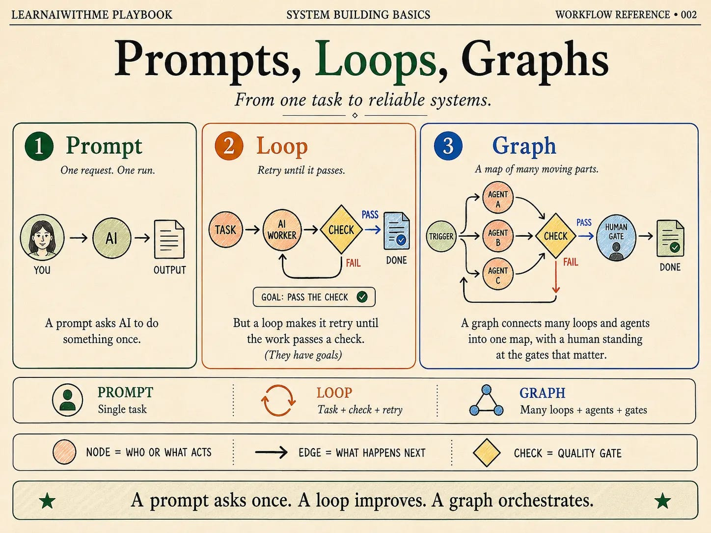
클릭하면 확대Prompt한 번 요청 · 한 번 실행나 → AI → 결과결과의 품질은 질문에 달려 있다 · 틀리면 사람이 다시 묻는다
Loop통과할 때까지 다시작업 → AI → 검사 ✕ → 다시 … ✓ → 완료목표(검사)가 있어 스스로 고친다 · 앞의 Stop hook 빌드 게이트가 작은 루프다
Graph여러 부분의 지도시작 → 에이전트 A · B · C → 검사 → 사람 승인 → 완료여러 루프 · 에이전트를 한 흐름으로 엮고, 중요한 관문에 사람이 선다
노드누가 · 무엇이 일하나
→엣지다음에 무엇을 하나
검사품질 관문
LOOP ENGINEERING
사람은 「완료」를 정하고, AI 는 통과할 때까지 돈다
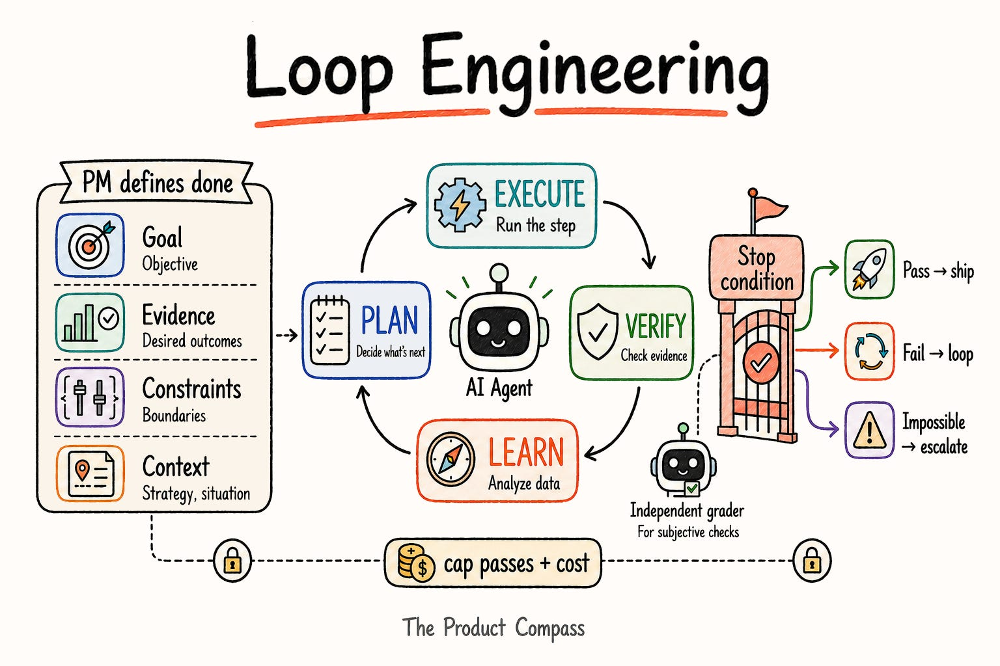
클릭하면 확대완료의 정의사람이 정한다목표 · 증거 · 경계 · 배경증거 테스트 · 빌드 통과 · 경계 건드리면 안 되는 파일 · 명령 · 배경 CLAUDE.md · Skill · 위키
반복AI 가 돈다계획 → 실행 → 검증 → 학습 → 계획 …결과를 증거로 확인하고, 실패 원인을 다음 계획에 반영한다
멈춤 조건관문통과 → 완료 · 실패 → 다시 · 불가능 → 사람에게설계 · 문장처럼 주관적인 판단은 독립 채점자(다른 모델 · 리뷰어 에이전트)가 본다
브레이크폭주 방지최대 반복 횟수 + 비용 상한멈추지 않는 루프는 토큰을 태운다 · Stop hook 의
stop_hook_active 도 같은 장치LOOP ENGINEERING · 실습
/goal · ralph-loop · /loop 로 루프를 돌려 본다
/goal조건을 이룰 때까지기본 내장앞 턴이 끝나면 다음 턴 · 다른 작은 모델이 「충족 · 불가능」을 판정해야 멈춘다
ralph-loop같은 프롬프트를 다시플러그인끝내려 하면 Stop hook 이 막고 같은 프롬프트를 다시 넣는다 · 완료 문구나 최대 반복에서 멈춘다
/loop시간마다 다시기본 내장정한 간격(1분~)마다 같은 요청 · 세션이 열려 있을 때만 · 취소하거나 7일 뒤 만료
| 단계 | Claude Code 에 입력 · 클릭하면 복사 | 확인할 것 | |
|---|---|---|---|
| 01 | /goal설치 없음 | /goal MovingAverageServiceTest 에 window 가 1 · 21 일 때 IllegalArgumentException 테스트가 있고 ./gradlew test -q 가 exit 0 이다. 다른 테스트 파일은 수정하지 않는다. 10턴 안에 끝낸다 | ◎ /goal active · 턴마다 판정이 뜨는가 · /goal 로 턴 수 · 토큰 확인 |
| 02 | ralph 설치없을 때만 | /plugin install ralph-loop@claude-plugins-official | /ralph-loop · /cancel-ralph 가 보이는가 |
| 03 | ralph-loop최대 반복 필수 | /ralph-loop "최저 종가 조회 API GET /api/stocks/{symbol}/min-close 와 테스트를 추가하고 ./gradlew test -q 가 통과하면 <promise>DONE</promise> 를 출력해" --completion-promise "DONE" --max-iterations 5 | 끝내려 할 때마다 같은 프롬프트로 다시 도는가 · DONE 또는 5회에서 멈추는가 |
| 04 | /loop시간 간격 | /loop 2m git status --short 로 바뀐 파일을 한 줄로 알려줘 | 2분마다 한 줄씩 오는가 · 두 번 보고 「git status 루프 취소해줘」 |
누가 끝을 정하나 /goal 은 다른 모델이 채점 · ralph 는 AI 가 완료 문구를 스스로 선언 · /loop 은 시간
브레이크 턴 · 반복 상한을 꼭 둔다 · 고정 간격 /loop 은 Esc 로 안 멈춘다 → 말로 취소
LOOP ENGINEERING · M9 과제 1
순위 필터·정렬 — 버튼은 있고, API 를 만든다
docs/practice/m9-ranking-filter.md화면 · 이미 연결됨
전체국내해외
코스콤증권 거래대금코스콤증권 거래량거래대금거래량급상승급하락
누르면 → GET /api/dashboard/rankings?market=DOMESTIC&sort=RISE
지금 서버가 파라미터를 무시 → 무엇을 눌러도 17개 그대로 · 파란 테두리 버튼만 과제 범위
파라미터
| 이름 | 값 | 동작 |
|---|---|---|
market | ALL 생략 시 | 전체 |
DOMESTIC | 국내만 · overseas = false | |
OVERSEAS | 해외만 · overseas = true | |
sort | TRADE_AMOUNT 생략 시 | rank_no 오름차순 |
RISE | 등락률 change_rate 내림차순 | |
FALL | 등락률 change_rate 오름차순 |
등락률이 같으면 rank_no 오름차순
규칙
- 정해진 값이 아니면 (소문자
rise포함) → 400 - 파라미터를 모두 생략하면 지금과 같은 결과 · 응답 형식은 그대로
- Controller → Service → Mapper · SQL 은
DashboardMapper.xml StockController·MovingAverageService는 수정하지 않는다
데이터 · 준비됨
stock_ranking 17개 — 국내 7 · 해외 10 · 컬럼 rank_no · overseas · change_rate
확인용 예시 · 시드 데이터 기준
| 요청 | 기대 결과 |
|---|---|
| (파라미터 없음) | 17개 · 1위 SOXL |
?market=DOMESTIC&sort=RISE | 7개 · 1위 코스모스바이오 +29.94% · 2위 에코프로비엠 +7.81% |
?market=OVERSEAS&sort=FALL | 10개 · 1위 SOXS -2.11% |
?market=KR · ?sort=rise | 400 |
완료 기준
./gradlew test통과 (기존 테스트 포함)- 파라미터 표의 각 행과 400 을 검증하는 테스트가 있다
- 다시 띄운 화면에서 버튼을 누르면 순위가 바뀐다
LOOP ENGINEERING · M9 과제 1 · 실습 · 1/2
순위 필터·정렬을 내 루프로 구현한다
준비 M8 에서 만든 내 루프 (완료 기준 · Stop 훅 · test-runner) · edu-stock-chart 폴더에서 연 Claude Code
| 단계 | Claude Code 에 입력 · 클릭하면 복사 | 확인할 것 | |
|---|---|---|---|
| 01 | 띄워 보기구현 전 상태 | ! ../scripts/start.sh! ..\scripts\start.bat | localhost:5173 에서 국내를 눌러도 17개 그대로인가 · 위는 macOS · Linux, 아래는 Windows |
| 02 | 과제 입력스펙 전부 · 한 번에 | edu-stock-chart 의 GET /api/dashboard/rankings 에 market · sort 파라미터를 추가해줘.
- market: ALL(기본) 전체 · DOMESTIC 국내(overseas = false) · OVERSEAS 해외(overseas = true)
- sort: TRADE_AMOUNT(기본) rank_no 오름차순 · RISE change_rate 내림차순 · FALL change_rate 오름차순 · 등락률이 같으면 rank_no 오름차순
- 정해진 값이 아니면(소문자 포함) 400 · 파라미터를 생략하면 지금과 같은 결과 · 응답 형식은 바꾸지 않는다
- Controller → Service → Mapper 계층 · SQL 은 DashboardMapper.xml · StockController 와 MovingAverageService 는 수정하지 않는다
- 각 조건과 400 을 검증하는 테스트를 추가하고 ./gradlew test 가 통과하면 끝 | Plan 이 나오면 승인만 · 이후 입력하지 않는다 |
LOOP ENGINEERING · M9 과제 1 · 실습 · 2/2
순위 필터·정렬을 내 루프로 구현한다
| 단계 | Claude Code 에 입력 · 클릭하면 복사 | 확인할 것 | |
|---|---|---|---|
| 03 | 지켜보기개입 최소 | — 입력 없음 — | 테스트 실패 → 스스로 고침을 반복하는가 · 잘못 가면 코드를 고치지 말고 기록 |
| 04 | 다시 띄우기새 코드 반영 | ! ../scripts/stop.sh && ../scripts/start.sh | 국내 7개 · 국내 + 급상승 1위 코스모스바이오 |
| 05 | 예시로 확인실제 서버 호출 | 실행 중인 서버에 다음을 호출해 기대값과 맞는지 표로 보여줘: 파라미터 없음 17개 1위 SOXL · market=DOMESTIC&sort=RISE 7개 1위 코스모스바이오 · market=OVERSEAS&sort=FALL 10개 1위 SOXS · market=KR 과 sort=rise 는 400 | 5개 모두 일치하는가 |
기록 무엇이 부족해 헤맸나 → CLAUDE.md · 훅 · 완료 기준 중 어디를 고칠지 적는다
다음 루프에 화면 검증을 붙이고 → 과제 2 · 종목 검색으로 차이를 본다
LOOP ENGINEERING · M9 · 루프 강화 · 1/2
테스트 다음은 화면 — Playwright 를 루프의 검증에 넣는다
준비 과제 1 을 마치고 서비스가 떠 있는 상태 · Playwright MCP 연결 (32장) · edu-stock-chart 폴더에서 연 Claude Code
구현→테스트Stop 훅 · test-runner→다시 띄우기../scripts→화면 확인ui-verifier · Playwright→끝
실패하면 어느 단계든 → 고치고 처음부터
| 단계 | Claude Code 에 입력 · 클릭하면 복사 | 확인할 것 | |
|---|---|---|---|
| 01 | 검증 노드 만들기ui-verifier 서브에이전트 | 화면 검증 전용 서브에이전트를 .claude/agents/ui-verifier.md 로 만들어줘.
- playwright MCP 로 http://localhost:5173 을 열고 받은 시나리오를 순서대로 직접 클릭 · 입력해 확인한다
- 결과는 시나리오별 통과 · 실패 한 줄과 실패 화면 스크린샷 경로만 돌려준다 · 페이지 스냅샷 전체는 돌려주지 않는다
- 코드는 수정하지 않는다 | 파일이 생기는가 · /agents 에 ui-verifier 가 보이는가 (안 보이면 재시작) |
| 02 | 시나리오 저장화면의 완료 기준 | 다음 화면 시나리오를 ui-scenarios.md 로 저장해줘
1. 순위 표에서 국내를 누르면 7행이고 1행은 삼성전자
2. 이어서 급상승을 누르면 1행은 코스모스바이오
3. 해외와 급하락을 누르면 1행은 SOXS
4. 검색창에 삼성을 입력하면 목록 4개 · 첫 항목은 삼성SDI
5. 검색창에 % 를 입력하면 「검색 결과가 없습니다」 | 5개가 저장되는가 · 시나리오는 사람이 정한 화면의 정답 |
LOOP ENGINEERING · M9 · 루프 강화 · 2/2
테스트 다음은 화면 — Playwright 를 루프의 검증에 넣는다
| 단계 | Claude Code 에 입력 · 클릭하면 복사 | 확인할 것 | |
|---|---|---|---|
| 03 | 완료 기준에 넣기CLAUDE.md | CLAUDE.md 의 완료 기준에 추가해줘: edu-stock-chart-ui 가 호출하는 API 를 바꿨다면 ../scripts 의 stop · start 스크립트로 다시 띄우고 ui-verifier 로 ui-scenarios.md 를 확인해 모두 통과해야 끝이다. 실패하면 원인을 고치고 다시 확인한다 | 테스트 통과 → 화면 확인 순서로 들어갔는가 |
| 04 | 빨간불 먼저검증기를 검증 | ui-verifier 로 ui-scenarios.md 를 확인해줘 | 1~3 통과 (과제 1 완료) · 4~5 실패 (검색 미구현 → 「검색 기능 준비 중」) · 실패를 못 잡으면 시나리오를 고친다 |
왜 서브에이전트 화면 스냅샷은 한 번에 수천 토큰 · 메인 대화에는 통과 · 실패 한 줄만 돌아온다 (컨텍스트 격리)
더 단단하게 시나리오를
npx playwright test 스크립트로 만들면 Stop 훅에서 사람 없이 돈다
LOOP ENGINEERING · M9 과제 2
종목 검색 — 검색창은 있고, API 를 만든다
docs/practice/m9-stock-search.md화면 · 이미 연결됨
지금
→
삼성
검색 기능 준비 중 · /api/stocks/search 미구현
구현 후
삼성
삼성SDI 006400 · KOSPI
삼성물산 028260 · KOSPI
…
삼성물산 028260 · KOSPI
…
입력하면 → GET /api/stocks/search?q=삼성 · 결과를 눌러도 화면 전환 없음
응답
[{ "symbol": "005930", "name": "삼성전자", "market": "KOSPI" }, …]
필드 이름이 다르면 목록이 깨진다 — 화면이 symbol · name · market 을 읽는다
데이터 · 준비됨
stock 테이블 32개 — 국내 20 · 해외 12 · 컬럼 symbol · name · market
규칙
- Controller → Service → Mapper · SQL 은 Mapper XML
- 검색용 Controller · Service · Mapper 를 새로 만든다
StockController·MovingAverageService는 수정하지 않는다
검색 조건
| 조건 | 동작 |
|---|---|
| 대상 | symbol 또는 name 에 들어 있으면 (부분 일치) |
| 영문 | 대소문자 구분 안 함 — tsla → 테슬라 |
% · _ | 와일드카드가 아니라 글자 그대로 — % → 빈 목록 |
| 검색어 | 앞뒤 공백 제거 · 없거나 공백뿐이면 400 |
| 정렬 · 개수 | name 오름차순 · 최대 10건 · 없으면 200 과 [] |
확인용 예시 · 시드 데이터 기준
| 검색어 | 기대 결과 |
|---|---|
삼성 | 4개 · 삼성SDI → 삼성물산 → 삼성바이오로직스 → 삼성전자 |
tsla · ␣sox␣ | 테슬라 · SOXL, SOXS |
0 | 10개 (11개 이상 일치) |
% · _ · 없는종목 | 빈 목록 |
공백만 · q 없음 | 400 |
완료 기준
./gradlew test통과 · 검색 조건 각 줄을 검증하는 테스트- 다시 띄운 화면의 검색창에 입력하면 결과 목록이 뜬다
LOOP ENGINEERING · M9 과제 2 · 실습 · 1/2
종목 검색을 고친 루프로 다시 돌린다
준비 화면 검증을 붙인 내 루프 (Stop 훅 · test-runner · ui-verifier · ui-scenarios.md) · edu-stock-chart 폴더에서 연 Claude Code
| 단계 | Claude Code 에 입력 · 클릭하면 복사 | 확인할 것 | |
|---|---|---|---|
| 01 | 띄워 보기구현 전 상태 | ! ../scripts/stop.sh && ../scripts/start.sh! ..\scripts\stop.bat && ..\scripts\start.bat | 검색창에 삼성 → 검색 기능 준비 중 이 뜨는가 · 아래는 Windows |
| 02 | 과제 입력스펙 전부 · 한 번에 | edu-stock-chart 에 종목 검색 API GET /api/stocks/search?q= 를 추가해줘. 데이터는 stock 테이블(symbol · name · market).
- 응답: [{ "symbol": "005930", "name": "삼성전자", "market": "KOSPI" }] 형식의 목록
- q 는 앞뒤 공백을 제거하고 쓴다 · 없거나 공백뿐이면 400
- symbol 또는 name 부분 일치 · 영문 대소문자 무시 · % 와 _ 는 와일드카드가 아니라 글자 그대로 찾는다
- name 오름차순 · 최대 10건 · 결과가 없으면 200 과 빈 목록
- Controller → Service → Mapper 계층 · 검색용 Controller · Service · Mapper 를 새로 만든다 · StockController 와 MovingAverageService 는 수정하지 않는다
- 각 조건을 검증하는 테스트를 추가하고 ./gradlew test 가 통과하면 끝 | Plan 이 나오면 승인만 · 이후 입력하지 않는다 |
LOOP ENGINEERING · M9 과제 2 · 실습 · 2/2
종목 검색을 고친 루프로 다시 돌린다
| 단계 | Claude Code 에 입력 · 클릭하면 복사 | 확인할 것 | |
|---|---|---|---|
| 03 | 지켜보기1차와 비교 | — 입력 없음 — | 테스트 통과 뒤 스스로 다시 띄우고 ui-verifier 를 부르는가 · 과제 1 에서 고친 규칙이 같은 실수를 막는가 |
| 04 | 화면 검증 보고루프가 한다 | — 입력 없음 — | 시나리오 5개 모두 통과를 보고하고 끝나는가 · 4~5 가 실패면 스스로 고쳐 다시 확인하는가 |
| 05 | 예시로 확인실제 서버 호출 | 실행 중인 서버에 /api/stocks/search 를 호출해 기대값과 맞는지 표로 보여줘: 삼성 4개(삼성SDI 가 처음) · tsla 테슬라 · 앞뒤 공백 sox SOXL·SOXS · 0 은 10개 · % 와 _ 와 없는종목 은 빈 목록 · 공백만과 q 없음은 400 | 모두 일치하는가 |
1차 vs 2차 무엇을 고쳤더니 무엇이 좋아졌나 — 턴 수 · 개입 횟수 · 같은 실수 반복 · 화면까지 확인했는가
주의
삼성SDI 가 먼저인 것은 정상 (영문이 한글보다 앞) · 버그로 보고 고치게 두지 않는다
CODE REVIEW
코드는 싸졌고, 리뷰가 새 병목이 됐다
요구사항사람→코드 작성AI · 몇 분→리뷰 · 검증사람 · 그대로 → 줄이 길어진다→배포그대로
가장 느린 단계가 전체 속도를 정한다 — 쓰기를 빠르게 해도 리뷰가 그대로면 배포는 그대로
AI 도입이 많은 팀에서 일어난 일
+98%병합된 PR 수
+91%PR 리뷰 시간
+154%PR 크기
+9%개발자당 버그
조직 전체의 배포 속도 · 리드 타임 · 장애율은 그대로 — 개인은 빨라졌는데 회사는 빨라지지 않았다병목이 「쓰기」에서 「리뷰 · 검증」으로 옮겨 갔다
출처 Faros AI, The AI Productivity Paradox (2025) · 개발자 10,000+ · 1,255 팀 텔레메트리 · 분석 도구 회사의 자료이며 인과가 아닌 상관관계
그래서 코드 품질이 더 중요해졌다
테스트 통과 ≠ 좋은 코드M9 에서 본 함정 —
${} SQL 인젝션 · 400 대신 500 · 범위 밖 수정은 테스트가 못 잡는다사람 리뷰가 가장 비싸다AI 가 만든 PR 은 많고 크다 · 사람이 줄마다 읽으면 그 자리에서 줄이 막힌다
버그는 큰 PR 에 숨는다PR 이 커질수록 꼼꼼히 못 본다 · 놓친 결함은 운영에서 더 비싸게 돌아온다
AI 가 1차로 거른다
/code-review 로 정확성 문제를 먼저 걸러내고, 사람은 설계 · 요구사항 판단에 시간을 쓴다/code-review — Claude Code 내장 리뷰 · 변경(diff)을 새 서브에이전트가 읽고 버그를 찾아 보고한다low ~ max 로 깊이 조절 · 대상 지정 (PR · 브랜치 · 경로) · --fix 로 바로 수정 · ultra 는 클라우드 정밀 리뷰
CODE REVIEW · 왜 별도 세션인가
쓴 사람이 채점하면 점수가 후하다
원인 · 연구와 공식 문서
자기 선호 편향LLM 평가자는 자기가 쓴 글을 알아보고 더 높게 평가한다 · 알아보는 능력이 클수록 편향도 커진다Panickssery · Bowman · Feng, LLM Evaluators Recognize and Favor Their Own Generations (NeurIPS 2024)
혼자서는 못 고친다외부 피드백 없이 스스로 다시 보면 잘 고쳐지지 않고, 오히려 나빠지기도 한다Huang et al., Large Language Models Cannot Self-Correct Reasoning Yet (ICLR 2024)
이유를 알면 믿는다같은 대화의 리뷰어는 「왜 이렇게 짰는지」를 이미 듣고 있다 · 새 컨텍스트 리뷰어는 diff 와 기준만 보고 결과 자체로 판단한다Anthropic, Claude Code Best practices — Add an adversarial review step
꽉 찬 컨텍스트구현으로 가득 찬 세션은 앞의 지시를 잊고 실수가 늘어난다 — 컨텍스트가 찰수록 성능이 떨어진다Anthropic, Claude Code Best practices
"A fresh context improves code review since Claude won't be biased toward code it just wrote."— Claude Code Best practices · Writer / Reviewer 패턴 (Session A 가 쓰고 Session B 가 리뷰)
리뷰가 얼마나 독립적인가
①
같은 대화에서 「검토해줘」쓴 맥락 그대로 채점 · 작성자 = 채점자
②
같은 세션에서
/code-review리뷰는 새 서브에이전트가 한다 · 그러나 결과를 받아 무엇을 고칠지 판단하는 건 작성 세션③
별도 세션에서
/code-review실습작성 대화 · 판단까지 분리 · 다른 모델로 볼 수 있다 · 결과는 사람이 골라 작성 세션에 넘긴다④
/code-review ultra클라우드에서 여러 에이전트가 더 깊게 본다 · 별도 과금 · 직접 입력해야 시작주의 — 찾으라면 찾는다 · 리뷰어는 문제가 없어도 무언가를 보고한다 · 정확성 · 요구사항에 해당하는 것만 고치고 나머지는 선택 (다 고치면 과설계)
CODE REVIEW · 실습
별도 세션에서 /code-review 로 과제 코드를 리뷰한다
/code-review레벨
low 확실한 것만 · medium ~ max 넓게 · 생략하면 지난번 레벨을 다시 쓴다대상뒤에 붙인다생략 = 현재 브랜치 + 커밋 안 한 변경 ·
src/main 경로 · HEAD~3..HEAD 커밋 · PR 번호--fix · --max-findings플래그
--fix 리뷰가 바로 고친다 (체크포인트 밖 → git 으로 되돌림) · --max-findings all 전부 보기| 단계 | 입력 · 클릭하면 복사 | 확인할 것 | |
|---|---|---|---|
| 01 | 새 세션 열기작성 세션은 그대로 | cd edu-stock-chart && claude | 새 터미널 창에서 · 과제를 구현한 대화와 다른 세션인가 |
| 02 | 모델 고르기선택 · 다른 눈 | /model | 작성 때와 다른 모델을 고르면 편향이 더 줄어든다 |
| 03 | 리뷰 실행변경 전체 | /code-review | 백그라운드로 돌고 결과가 도착하는가 · 파일 위치 · 한 줄 요약 · correctness 같은 분류 |
| 04 | 깊게 · 좁게레벨과 대상 | /code-review high src/main | low 보다 발견이 늘어나는가 · 지정한 경로만 보는가 |
| 05 | 함정 대조테스트가 놓친 것 | 방금 리뷰 결과 중 SQL 인젝션(${}) · 400 대신 500 · % 와 _ 미처리 · 범위 밖 수정(StockController 등)에 해당하는 것을 표로 정리해줘 | 테스트는 통과했는데 리뷰가 잡은 문제가 있는가 |
| 06 | 작성 세션에 넘기기Writer ← Reviewer | 리뷰 결과: [붙여넣기]. 정확성 · 요구사항에 해당하는 것만 고치고 ./gradlew test 와 ui-verifier 로 다시 확인해줘 | 원래 작성 세션에 입력 · 고친 뒤 테스트 · 화면 검증까지 통과하는가 |
| 07 | 다시 리뷰리뷰 세션에서 | /code-review | 이전 발견이 사라졌는가 · 새로 나온 것이 정확성 문제인가 |
왜 --fix 를 안 쓰나 고칠지 말지는 사람이 골라 작성 세션에 넘긴다 — 리뷰 세션이 고치면 다시 「쓴 사람」이 된다
버전 Claude Code v2.1.223 이상 (
--max-findings 는 v2.1.288) · /review 도 같은 명령 · ! claude --version
GRAPH ENGINEERING
비슷한 것이 아니라 연결된 것을 찾는다
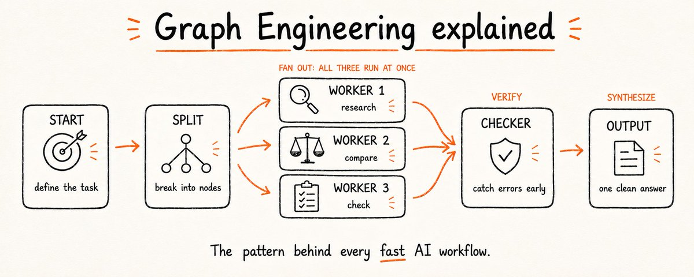
클릭하면 확대노드와 엣지그래프는 이 둘뿐노드 아는 것 · 일하는 것 (사람 · 결정 · 장애 · 작업자)
엣지 그 사이의 연결 — 위 그림처럼 나누고 · 동시에 돌리고 · 검사해 합친다
엣지 그 사이의 연결 — 위 그림처럼 나누고 · 동시에 돌리고 · 검사해 합친다
연결을 따라 찾는다여러 단계(hop)Job queue —결정→ ADR-007
ADR-007 —대체→ ADR-003
ADR-003 —원인→ 장애 03-11「Redis 를 왜 뺐나?」 벡터는 Redis 언급 글 10개, 그래프는 이유의 사슬 3개
ADR-007 —대체→ ADR-003
ADR-003 —원인→ 장애 03-11「Redis 를 왜 뺐나?」 벡터는 Redis 언급 글 10개, 그래프는 이유의 사슬 3개
관계에 이름을 붙인다타입 있는 엣지관련 있음 → 1비트
supersedes · depends_on
decided_by · caused누가 누구를 대체했는지 · 무엇이 원인인지 알아야 AI 가 추론할 수 있다
supersedes · depends_on
decided_by · caused누가 누구를 대체했는지 · 무엇이 원인인지 알아야 AI 가 추론할 수 있다
언제 쓰나질문에 따라 나눠 쓴다강함 여러 단계 연결 · 시간에 따른 변화 · 전체 종합
약함 단순 조회 · 비용 → 이때는 벡터 검색
주의 「같은 대상」 판단이 틀리면 단계마다 오류가 곱해진다 — 위키 링크
약함 단순 조회 · 비용 → 이때는 벡터 검색
주의 「같은 대상」 판단이 틀리면 단계마다 오류가 곱해진다 — 위키 링크
[[ ]] 는 사람이 이미 이어 둔 그래프
AI-SDLC · 1/4
병목은 코드에서 그 앞뒤로 옮겨갔다
AI 로 코드는 빨라졌지만 계획 · 검토 · 배포는 사람 속도 그대로다. 그래서 통제 목표는 그대로 두고 지키는 방식을 다시 짠다 — 이것이 AI 네이티브 SDLC 다.
기존
계획설계빌드 · 코드 작성 ← 병목테스트배포
AI 이후
계획 · 요구사항 ← 병목설계빌드검토 · 테스트 ← 병목배포 승인 ← 병목
줄 단위 코드 리뷰 · 회의 · 위원회 같은 사람 속도에 맞춘 통제가 에이전트의 생산량을 따라가지 못한다
AI 네이티브 SDLC — 각 단계가 다음 단계가 읽을 산출물을 git 에 남기는 루프
intent.md→spec.md→plan.md→diff + 테스트→PR · 리뷰 결과→배포→인시던트 기록↺ 새 intent.md산출물이 모두 버전 관리되니 커밋 · 작성자 · 시각이 그대로 감사 추적이 된다 · 사람은 단계마다 일하지 않고 게이트에서 판단한다
AI-SDLC · 2/4
6단계 — 산출물이 다음 단계로, 사람은 게이트에
| 단계 | 남기는 산출물 | AI 가 하는 일 | 사람 게이트 | |
|---|---|---|---|---|
| 01 | Plan의도 캡처 | intent.md | 질문으로 범위 · 사용자 · 제약 · 성공 기준을 구체화해 초안 작성 — 몇 주 → 몇 시간 | 프로덕트 오너 승인 |
| 02 | Design요구사항 + 설계 | spec.md | 조직 Skill(보안 · 컴플라이언스 · UX)을 적용해 한 세션에 요구사항과 설계를 함께 | PO 리뷰 · 고위험이면 테크리드 |
| 03 | Build계획 기반 구현 | plan.md · diff | plan mode 로 계획 먼저 → 승인 후 구현 · CLAUDE.md · Skill · Hook · 병렬 세션 | 엔지니어가 plan 승인 |
| 04 | Test스스로 검증 | 테스트 결과 · 빌드 로그 · 스크린샷 | 사람에게 넘기기 전에 스스로 검증 · 새 컨텍스트의 검증 서브에이전트 · CI 평가 | 코드 소유자 (증거 첨부 리뷰) |
| 05 | Deploy검토 · 배포 게이트 | PR · 리뷰 결과 · 배포 기록 | 모든 PR 에 같은 리뷰(버그 · 보안 · 스펙 준수) · 정책은 REVIEW.md | 코드 소유자 · 운영은 릴리스 매니저 |
| 06 | Maintain루프 닫기 | 인시던트 기록 · 새 intent.md | 스크립트가 이상을 감지하면 진단 → 수정 PR 또는 새 intent 로 01 단계에 되돌림 | 서비스 소유자 · on-call |
AI-SDLC · 3/4
통제는 문서가 아니라 하네스로 지킨다
권고Advisory
CLAUDE.md · Skill
AI 가 규칙을 적용할 가능성이 높다 · 위반은 드물지만 가능하다
앞에서CLAUDE.md 19–21장 · Skill 22–26장
강제Deterministic
Hook · 관리형 설정
막거나 확인을 받는다 · 항상 지켜지고 결정이 로그로 남는다
앞에서Hook 33–36장 · 꼭 지켜야 할 정책은 Skill 이 아니라 여기로
판단Gate
사람 승인
branch 보호 · 릴리스 매니저 서명 · 정책 오너에게 라우팅
앞에서그래프의 「사람 승인」 관문 52장
단계마다 지키는 핵심 규칙
- plan 승인 전에는 코드를 고치지 않는다 — 리뷰할 근거가 먼저다
- 버그는 실패하는 테스트부터 커밋하고, 테스트 파일 수정은 Hook 으로 막는다
- 최종 검증은 새 컨텍스트의 검증 서브에이전트가 — 만든 쪽의 가정에 끌려가지 않게
- 운영 배포는 승인 기록이 있을 때만 — Hook 이 막고 이유를 AI 에게 돌려준다
- 엔지니어가 우회할 수 없는 관리형 설정 — 시크릿 차단 · 네트워크 제한 · 샌드박스 · 승인된 MCP · Skill · Hook 만
AI-SDLC · 4/4
사람은 실행자에서 게이트의 판단자로
| 역할 | 기존 | AI 네이티브 |
|---|---|---|
| 프로덕트 오너 | 요구사항 작성 · 회의 주도 | intent.md · spec.md 검토 · 정책 충돌 해결 |
| 엔지니어 | 직접 코딩 · 줄 단위 리뷰 | 여러 세션 오케스트레이션 · plan 승인 · 게이트 판단 |
| QA | 단계 경계에서 검증 | 평가 세트 설계와 유지 |
| 플랫폼 엔지니어 | 파이프라인 관리 | Hook · Skill · 관리형 설정 · 평가 소유 |
| 기술 리드 | 리뷰 기준 관리 | REVIEW.md · CLAUDE.md · 위험 등급 판단 |
| 보안 리드 | 릴리스 전 스캔 | 정기 스캔 운영 · 발견 사항 분류 |
이렇게 시작한다
intent.md템플릿을 정하고 PO 가 직접 검토/init으로 CLAUDE.md 를 만들고 팀이 함께 관리- 정책 하나를 Skill 로 · 꼭 지킬 것은 Hook 으로
- 테스트 · 빌드를 명령 하나로 묶어 스스로 검증하게
- 세션은 2~3개로 시작 · CI 는 읽기 전용 판단부터
주의할 점
- 에이전트가 테스트를 고칠 수 있으면 검증이 무력화된다
- 병렬 세션을 늘리면 사람의 리뷰가 새 병목이 된다
- CLAUDE.md 가 길어지면 컨텍스트 낭비 · 지침 무시
- 진실의 원천이 둘이면 기록이 엇갈린다
AI-SDLC · 실습 · superpowers
superpowers 로 AI-SDLC 한 사이클을 돌린다
준비
/skills 에 brainstorming 이 없을 때만 /plugin install superpowers@claude-plugins-official · 과제: 종목별 기간 수익률 조회 API| SDLC 단계 · 스킬 | Claude Code 에 입력 · 클릭하면 복사 | 확인할 것 · 사람 게이트 | |
|---|---|---|---|
| 01 | Plan · Designbrainstorming | 종목별 기간 수익률 조회 API (GET /api/stocks/{symbol}/return?from=&to=) 를 만들고 싶어. brainstorming 부터 해줘 | 질문에 답하고 설계 승인 · docs/superpowers/specs/…-design.md = intent + spec |
| 02 | Build 준비writing-plans | 승인한 설계로 구현 계획을 써줘 | 2~5분 단위 작업 · 파일 경로 · 검증 단계 · docs/superpowers/plans/…md = plan.md · 계획 승인 |
| 03 | Build · Testexecuting-plans · TDD | 계획을 executing-plans 로 이 세션에서 실행해줘 | 작업마다 실패 테스트 먼저(RED) → 통과(GREEN) · ./gradlew test -q |
| 04 | Reviewrequesting-code-review | 계획 대비 코드 리뷰를 요청해줘 | 심각도별 이슈 · Critical 은 진행을 막는다 · 무엇을 고칠지 사람이 판단 |
| 05 | Deploy 준비finishing-a-development-branch | 개발 브랜치를 마무리해줘 | 테스트 확인 후 merge · PR · 보관 · 폐기 중 사람이 선택 |
AI-SDLC 대응 specs = intent · spec · plans = plan.md · 리뷰 = PR 게이트 · 단계마다 사람이 승인해야 다음으로
토큰 실행은 이 세션에서(executing-plans) · subagent-driven 은 작업마다 서브에이전트라 토큰이 크다
AI AGENT · 산출물
에이전트는 코드만이 아니라 그림 · 영상도 만든다
archify아키텍처 다이어그램
→ 단일 HTML (확대 · 테마) · PNG · SVG
한 문장이나 저장소를 읽어 구조도 · 시퀀스 등 5가지 다이어그램을 만든다
이럴 때설계 리뷰 · 신규 입사자 온보딩 · 발표에서 보여주고 탐색할 때
요청 예「이 저장소의 아키텍처를 archify 로 그려줘」
npx skills add tt-a1i/archify -g
drawio-skilldraw.io 다이어그램
→ .drawio · PNG · SVG · PDF
설명 · 코드 · SQL 스키마를 사람이 계속 고칠 수 있는 draw.io 파일로 만든다
이럴 때설계서 · 위키에 넣고 팀이 직접 편집하며 관리할 때
요청 예「schema.sql 을 ERD 로 그려서 PNG 로 내보내줘」
draw.io 데스크톱 + npx skills add Agents365-ai/drawio-skill -g
remotion영상
→ React 코드 → MP4
장면을 코드로 만들고 렌더한다 · 문구만 바꿔 다시 뽑기 쉽다
이럴 때기능 소개 · 릴리스 노트 · 교육 영상 · 회사 사용은 라이선스 확인
요청 예「이번 릴리스 기능 3개를 30초 소개 영상으로 만들어줘」
claude plugin install remotion@remotion
공통점 결과가 파일로 남는다 → git 으로 관리하고, 코드가 바뀌면 같은 요청으로 다시 만든다 · 보여주고 탐색은 archify, 계속 고치는 문서는 drawio
AI AGENT · 산출물 실습
archify · drawio-skill 로 우리 프로젝트를 그린다
준비
/skills 에 없을 때만 ! npx skills add tt-a1i/archify -g! npx skills add Agents365-ai/drawio-skill -g · drawio 는 draw.io 데스크톱 필요 · 설치 후 claude 재시작| 단계 | Claude Code 에 입력 · 클릭하면 복사 | 확인할 것 | |
|---|---|---|---|
| 01 | 구조도archify | archify 로 이 프로젝트의 아키텍처 다이어그램을 만들어줘. Controller → Service → Mapper → H2 흐름 중심으로 컴포넌트 8~12개 | HTML 하나가 생기는가 · 브라우저에서 확대 · 테마 전환 |
| 02 | 시퀀스archify | archify 로 GET /api/stocks/{symbol}/moving-average 요청의 시퀀스 다이어그램을 만들어줘 | 호출 순서가 실제 코드와 같은가 |
| 03 | ERDdrawio-skill | drawio-skill 로 src/main/resources/schema.sql 의 테이블 구조를 ERD 로 그리고 PNG 로도 내보내줘 | .drawio · .png 생성 · stock_price · account 컬럼이 맞는가 |
| 04 | 직접 고치기draw.io 앱 · 토큰 0 | draw.io 앱에서 .drawio 파일 열기 → 박스 · 선 이동 · 메모 추가 | AI 가 만든 그림을 사람이 바로 이어서 고칠 수 있는가 |
| 05 | 문서에 넣기재사용 | 만든 ERD PNG 를 README 에 「데이터 구조」 섹션으로 넣어줘 | 문서와 그림이 함께 git 에 남는가 |
고르는 기준 보여주고 탐색 → archify (HTML) · 계속 고치고 문서화 → drawio (.drawio)
토큰 범위를 좁혀 요청한다 — 컴포넌트 8~12개 · 테이블 2개 · 요청 하나
AI AGENT · 산출물 실습 · remotion
서비스를 띄우고, 그 데이터로 영상을 만든다
준비 Node.js · Git 필요
! node -v · 없을 때만 /plugin marketplace add remotion-dev/claude-code-plugin/plugin install remotion@remotion · 설치 후 재시작| 단계 | Claude Code 에 입력 · 클릭하면 복사 | 확인할 것 | |
|---|---|---|---|
| 01 | 서비스 기동실제 데이터 준비 | edu-stock-chart 를 백그라운드로 기동하고 /api/stocks/005930/moving-average?window=3 응답을 stock.json 으로 저장해줘 | localhost:8080 이 뜨는가 · JSON 에 날짜별 이동평균이 담기는가 |
| 02 | 영상 만들기remotion-create | /remotion:remotion-create stock.json 데이터로 삼성전자 3일 이동평균 선이 그려지는 20초 차트 영상을 만들어줘 | 영상 프로젝트가 생기는가 (npx create-video) · 데이터가 영상에 들어갔는가 |
| 03 | 미리보기Remotion Studio | Remotion Studio 를 띄워줘 | 브라우저 타임라인에서 장면을 넘겨 보며 확인 |
| 04 | 말로 고치기수정 | 제목을 크게 하고, 마지막 3초에 「edu-stock-chart 이동평균 API」 자막을 넣어줘 | Studio 화면에 바로 반영되는가 |
| 05 | 렌더MP4 | MP4 로 렌더하고, 기동한 서비스는 꺼줘 | out/ 에 mp4 가 생기고 재생되는가 · 8080 이 내려갔는가 |
토큰 API 는 한 번만 호출해 JSON 으로 · 렌더는 내 PC 의 CPU 가 한다 (토큰 0)
주의 첫 실행은 npm 설치로 몇 분 걸린다 · 회사에서 쓰면 Remotion 라이선스 확인
TREND · System One Models
Jev — 글 대신 「판단」을 돌려주는 빠른 모델
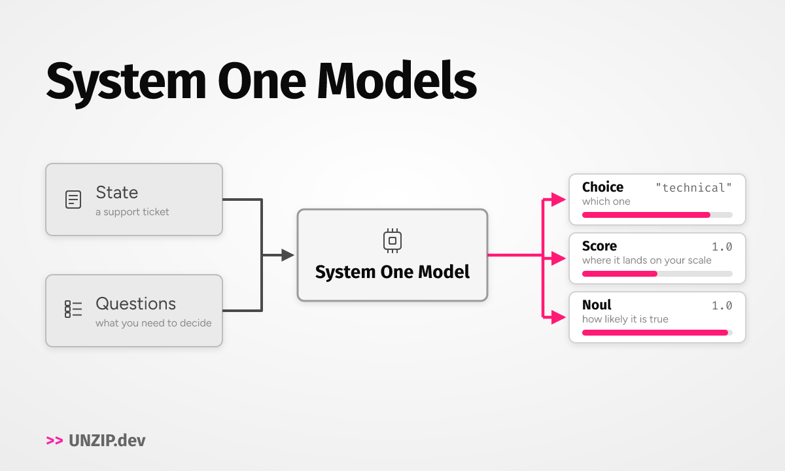
클릭하면 확대무엇인가빠른 생각 · System 1상태 + 질문 → 선택 · 점수 · 참일 확률LLM 이 천천히 생각해 글로 답한다면, Jev 는 빠르게 판단해 미리 정한 타입의 값과 신뢰도로 답한다
LLM 과 다른 점판단만 한다문자열 X · 한 번에 병렬 · 확률 항상 포함파싱 · 검증이 필요 없고 타입 오류가 없다 · 대신 대화 · 코드 · 글은 못 쓴다
얼마나 빠르고 싼가회사 발표 기준70 ~ 500ms · 입력 $0.042 / MTok · 출력 무료LLM 은 3 ~ 329초 · 단, 자체 측정이고 비용 보조 가능성 · 아직 얼리 액세스
어디에 쓰나똑똑한 if 문분류 · 라우팅 · 점수 · 대량 처리 · 검증루프의 검사, 그래프의 라우터처럼 자주 도는 판단을 LLM 대신 맡기면 빠르고 싸다
TREND · Jev 쓰임 예시
여러 개 중에서 확률로 고르고, 기준을 넘으면 바로 실행
고객 문의 분류여러 개 중 하나 · 선택
"앱에서 이체 버튼을 누르면 화면이 멈춰요"
질문 · 담당 부서는?
기술0.86
결제0.09
계정0.05
→ 기술팀 큐로 자동 배정
이상 거래 탐지참일 확률
새벽 3시 · 해외 IP · 평소의 20배 금액 이체
질문 · 이상 거래인가?
예0.92
아니오0.08
→ 0.8 이상이면 이체 보류 + 본인 확인
코드 리뷰 위험도척도 위의 점수
PR 요약 — 인증 필터 수정 · 테스트 없음
질문 · 위험도 (0 ~ 1)?
위험도0.74
→ 0.6 이상이면 사람 리뷰 필수 · 낮으면 자동 머지 후보
에이전트 라우팅그래프의 다음 노드
"삼성전자 최근 1년 수익률 비교표 만들어줘"
질문 · 다음에 일할 노드는?
조사0.71
작성0.22
검토0.07
→ 조사 노드로 보낸다
공통 패턴 상태 + 질문 → 선택지마다 확률 → 기준 이상이면 바로 실행, 낮으면 LLM · 사람에게 넘긴다 · 자주 도는 판단은 Jev, 애매한 것만 LLM · 값은 예시
TREND · 개발에서 Jev 쓰기
판단은 Jev, 글과 코드는 LLM
요청→Jev · 모델 선택→LLM · 코드 생성→Jev · 결과 판정→Jev · 실행 전 검사→통과 · 사람 확인
모델 선택라우팅 · 비용 절감
이 작업을 해낼 수 있는 가장 싼 모델은?
fast 조회 · 추출 · 국소 수정
powerful 아키텍처 · 고위험 판단
fast 조회 · 추출 · 국소 수정
powerful 아키텍처 · 고위험 판단
→ 쉬운 일은 싼 모델, 어려운 일만 큰 모델
LangChain 하네스 · 라우팅 미들웨어
생성 결과 판정Jev-as-a-Judge
테스트를 추가했는가? 확률
요구사항을 모두 다뤘는가? 확률
보안 위험도 0 ~ 1
요구사항을 모두 다뤘는가? 확률
보안 위험도 0 ~ 1
→ 큰 LLM 에게 통째로 채점시키지 않고 작은 질문 여러 개로 · 같은 질문 100번에도 점수가 거의 안 변한다
LangChain 실험 · 질문은 예시
실행 전 가드레일위험한 명령 막기
에이전트가 실행하려는 셸 명령
위험도는? 파일을 지우는가?
위험도는? 파일을 지우는가?
→ 기준 미만이면 실행, 넘으면 차단 · 사람 확인 — 36장 PreToolUse hook 의 판단을 Jev 가
LangChain AutoModeMiddleware(bash)
리뷰 우선순위사람이 볼 곳만
파일마다 변경 위험도 · 심각도 점수
→ 높은 파일만 사람 리뷰
→ 높은 파일만 사람 리뷰
→ 리뷰 코멘트 작성은 LLM, 어디를 볼지는 Jev
커뮤니티 · jev-review
한계 글 · 코드 · 리뷰 코멘트는 못 쓴다 → LLM 과 짝으로 · 아직 얼리 액세스 · 속도 · 비용 수치는 대부분 회사 발표